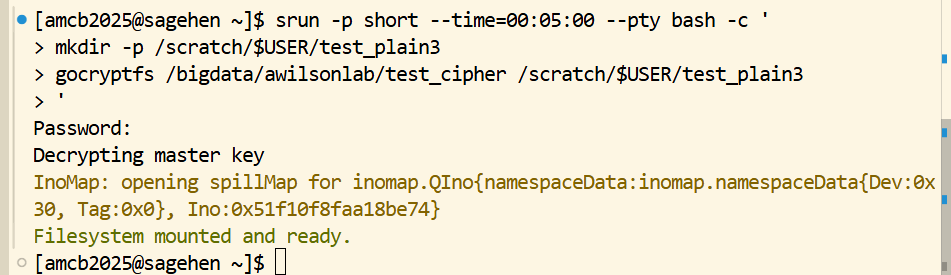
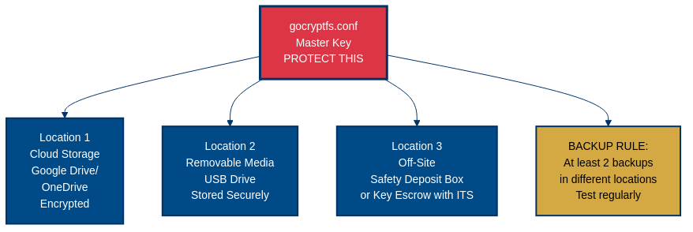

All in One View
Content from Why Encrypt? Regulations and Risk
Last updated on 2026-08-24 | Edit this page
Overview
Questions
- When is data encryption necessary?
- What are the regulatory requirements?
- What happens when research data is exposed?
Objectives
- Understand regulatory drivers for encryption (FERPA, HIPAA, EAR, NIST)
- Identify the cascading consequences of a data breach
- Know the scale of the problem in higher education
- Learn the regulatory landscape that requires encryption
A Real Breach: The Cautionary Tale
Three years ago, a researcher at a peer institution was analyzing student health data for a psychological study approved by IRB. The data included student ID numbers, health conditions, and counseling notes—classic FERPA and HIPAA-protected information. The researcher stored it in an unencrypted directory shared with a graduate student.
During a storage system maintenance window, a misconfiguration briefly exposed the shared directory to the entire campus network. No one noticed immediately. By the time discovered 36 hours later, the directory had been indexed by campus file search tools. The exposure affected 847 students’ health records.
The consequences cascaded rapidly:
- Day 1: Campus breach notification letter to 847 students
- Day 3: FERPA compliance investigation initiated
- Week 1: Research suspended; all data access revoked
- Month 1: University legal team involved; potential lawsuit from affected students
- Month 2: Federal HIPAA investigation launched; daily fines began accumulating
- Month 3: Researcher’s funding revoked by agency; publication retracted
- Month 6: Settlement reached; university paid $2.4M in damages and remediation
- Ongoing: Researcher’s reputation damaged; unfunded for future grants; removed from advisory committees
This wasn’t malicious hacking. It was a preventable storage misconfiguration—precisely what encryption stops.
The Domino Effect of Unencrypted Data
A single breach can trigger cascading consequences:
Immediate (Days):
- Breach notification to affected individuals
- Regulatory agency notification
- Media coverage
- Social media backlash
Short-term (Weeks):
- Compliance investigations by multiple agencies
- Suspension of related research
- Funding agency inquiries
- Legal team involvement
Medium-term (Months):
- Potential fines (FERPA: $60,000 per violation; HIPAA: $100–$50,000 per record)
- Settlement negotiations
- Remediation costs (credit monitoring, notifications, legal fees)
- Publication retraction or correction
Long-term (Years):
- Reputational damage
- Lost grant funding
- Career impact
- Difficulty recruiting collaborators
- Institutional reputation damage
Encryption prevents this entire cascade. One encrypted directory avoids millions in potential costs.
The Scale of the Problem
Higher education is a persistent target for data breaches:
- 500+ million student records exposed in breaches at U.S. educational institutions over the past 5 years
- Average cost per record: $150–$300 (notification, remediation, legal)
- FERPA violations at 40+ U.S. colleges in the past 3 years alone
- Average HIPAA fine: $28,000 per violation
- Time to detect breach: 287 days average (months of exposure before discovery)
Encryption dramatically reduces the damage even if a breach occurs: encrypted data is inaccessible and unmarketable.
The Regulatory Landscape
Multiple federal laws and regulations require encryption of research data:
FERPA (Family Educational Rights and Privacy Act)
What it covers: Any information linked to a student that could identify them - Student ID numbers - Grades and transcripts - Course enrollment - Disciplinary records - Psychological counseling notes - Academic performance data
Why it matters: Applies to all student data, even if anonymized by name (student ID is identifiable)
Violation penalties: $60,000+ per violation; personal liability
Encryption requirement: “Encryption or other method of secure authentication” (NIST SP 800-171, Control 3.13.11)
Pomona relevance: Any study recruiting Pomona students or using institutional records
HIPAA Security Rule (45 CFR § 164.312(a)(2))
What it covers: Protected health information (ePHI)
- Medical diagnoses and treatment
- Psychological or psychiatric records
- Medication information
- Lab results
- Any health-related data
Why it matters: Applies even to small research studies collecting health data
Violation penalties: $100–$50,000 per record per violation
Encryption requirement: “Encryption of electronic protected health information” (HIPAA mandates encryption of data at rest)
Pomona relevance: Biomedical research, psychology studies, health sciences research
Export Administration Regulations (EAR) and International Traffic in Arms Regulations (ITAR)
What it covers: Research with potential military, security, or dual-use applications
- Cryptography research
- Materials science (advanced ceramics, composites)
- Semiconductor manufacturing
- Advanced manufacturing processes
- AI/ML in sensitive domains
- Some chemistry and physics research
Why it matters: “Deemed export” rule—sharing with foreign nationals (including postdocs on visa) is treated as exporting controlled technology
Encryption requirement: NIST SP 800-171 “Controlled Unclassified Information” (CUI) protection standard
Pomona relevance: Physics, chemistry, engineering, and CS research with international collaborators
NIST SP 800-171 (Controlled Unclassified Information)
What it covers: Any federally funded research with restrictions
- CUI data (research sensitive for national security reasons)
- Data with export control implications
- Data with patent/IP protection value
Why it matters: Many federal grants (NSF, DARPA, DOD) require CUI compliance
Key control (3.13.11): Encryption of information at rest using FIPS 140-2/3-validated algorithms (AES-256 meets this)
Pomona relevance: NSF-funded research, DOD grants, DOE grants
Pomona ITS Policy 24: Data Classification and Protection
What it establishes: Institutional requirement to classify all research data and apply appropriate protections
Key requirement: “RESTRICTED data must employ encryption or equivalent controls”
Who must comply: All faculty, students, staff conducting research
Enforcement: Policy violation can result in account suspension and research termination
Challenge: Regulatory Match
For each research scenario below, identify which primary regulation applies: FERPA, HIPAA, EAR, or NIST SP 800-171.
- A psychology professor is analyzing anonymized counseling session notes linked to student ID numbers for a study on academic stress.
- A biology lab is collecting blood pressure and medication data from volunteer participants in a clinical nutrition study.
- A physics researcher is collaborating with a visiting scholar from abroad on advanced semiconductor fabrication techniques with potential dual-use applications.
- A computer science professor has received a DARPA grant to develop new AI algorithms, and the grant terms classify the research output as Controlled Unclassified Information (CUI).
- FERPA — The data is linked to student ID numbers, which are personally identifiable student records. Even though counseling notes may also touch HIPAA, the student ID linkage makes FERPA the primary regulation at an educational institution.
- HIPAA — Blood pressure and medication data are Protected Health Information (ePHI). Any research collecting health-related data from participants falls under HIPAA Security Rule requirements.
- EAR — Semiconductor fabrication techniques are export-controlled technology. Sharing with a foreign national (even on campus) triggers the “deemed export” rule under Export Administration Regulations.
- NIST SP 800-171 — DARPA grants that classify output as CUI require compliance with NIST SP 800-171 controls, including encryption of data at rest (Control 3.13.11) using FIPS 140-2/3-validated algorithms like AES-256.
- Encryption is required for FERPA, HIPAA, EAR/ITAR, and NIST CUI-protected data
- A single breach cascades: notification → investigation → fines → reputation damage → career impact
- Higher education is a persistent breach target; 500+ million records exposed in 5 years
- FERPA violations cost $60,000+ per violation; HIPAA violations $100–$50,000 per record
- Pomona ITS Policy 24 mandates encryption for RESTRICTED data
- Encryption stops preventable breaches like storage misconfigurations
- Back up gocryptfs.conf separately; it cannot be recovered without the file
Content from Pomona's Data Classification System
Last updated on 2026-08-24 | Edit this page
Overview
Questions
- What data requires encryption at Pomona?
- How do I classify my research data?
- What does gocryptfs protect against?
Objectives
- Understand Pomona’s three-tier data classification system
- Learn what data falls into each tier (PUBLIC, PROPRIETARY, RESTRICTED)
- Know what gocryptfs protects and doesn’t protect
- Understand why encryption alone is not enough
- Learn what “beyond compliance” means for your research
Understanding Pomona’s Three-Tier Data Classification System
Pomona College ITS Policy 24 defines three data tiers. Understanding these is essential for knowing when encryption is required.
![Three-column diagram of Pomona data classification tiers. Tier 1 PUBLIC, green, Unix permissions 755: published papers and datasets, open government data, public course materials; encryption not needed, no exposure risk, share freely. Tier 2 PROPRIETARY, orange, permissions 750: unpublished research data, draft manuscripts and code, pre-patent inventions; encryption recommended, exposure risks lost priority and competitive harm, lab members only. Tier 3 RESTRICTED, red, permissions 700 plus gocryptfs: student records under FERPA, health data under HIPAA, export-controlled work under EAR and ITAR; encryption mandatory, exposure risks federal penalties and harm to research subjects.](fig/classification-tiers.png)
Tier 1: PUBLIC Data (Green, Unix permissions 755)
What it includes: - Published research papers - Anonymized aggregated statistics - Marketing materials - Lecture notes - Published code
Where to store: /bigdata (no encryption required)
Who can access: Everyone
If exposed: No impact
Encryption: Not required
Tier 2: PROPRIETARY Data (Orange, Unix permissions 750)
What it includes: - Unpublished research data (pre-publication) - Preliminary analysis results - Code under development - Industry collaboration data (non-confidential) - Institutional information (committee records) - Internal grant proposals
Where to store: /bigdata or /rhome with group access controls
Who can access: Research group members
If exposed: Competitive disadvantage, loss of publication advantage
Encryption: Recommended but not mandated
Example: Your dataset analyzing crime patterns before publication—valuable because unpublished, but doesn’t directly harm individuals if leaked.
Tier 3: RESTRICTED Data (Red, Unix permissions 700+gocryptfs)
What it includes: - FERPA-protected student records (IDs, grades, transcripts) - Medical information (health records, psychological counseling notes) - Personally identifiable information + sensitive data (names + financial info) - Export-controlled research data (ITAR/EAR) - Proprietary data under NDA or confidentiality agreement - Biometric data - Social Security numbers, passport numbers - Financial account information
Where to store: /bigdata or /rhome with gocryptfs encryption
Who can access: Only authorized researchers with passphrase
If exposed: Legal liability, regulatory fines, personal harm to subjects
Encryption: MANDATORY
Example: Student survey responses with ID numbers; health screening data from a clinical study; export-controlled research in materials science or cryptography.
Legal Requirement: Not Optional
Encryption for RESTRICTED data is not just policy; it’s federal law. FERPA, HIPAA, and EAR violations carry: - Personal legal liability (you, not just the institution) - Criminal penalties (up to $250,000+ per HIPAA violation) - Research suspension (immediate halting of all related work) - Career consequences (difficulty securing future funding)
Failing to encrypt RESTRICTED data can result in disciplinary action, account suspension, and legal consequences. If you have ANY doubt about whether your data needs encryption, encrypt it. Better safe than facing federal investigators.
What gocryptfs Protects
What It DOES Protect
- File contents: Data at rest encrypted with AES-256-GCM (unbreakable with current technology)
- Accidental access: Unauthorized users cannot read encrypted data without passphrase
- Laptop theft: If your computer is stolen, encrypted data remains secure
- Storage media disposal: Old drives or decommissioned systems can be safely discarded
- Compliance with regulations: Satisfies FERPA, HIPAA, EAR, and NIST requirements
- Filename privacy: Even filenames are encrypted (only you see the real structure)
- Storage misconfiguration: Even if accidentally exposed, encrypted files are unreadable
What It DOES NOT Protect
- Active sessions: While mounted, data is accessible in plaintext to anyone on your account
- Weak passwords: gocryptfs is only as secure as your master passphrase (must be 14+ characters)
- Network traffic: Data in transit (SSH, SCP, network copies) is a separate concern (use SSH for transport security)
- Accidental deletion: Encryption doesn’t prevent rm or accidental file deletion
- System administrator access: Root user can access mounted data or read memory
- Malware: If your system is infected, malware can read mounted plaintext data
- Metadata: File sizes, modification times, and directory structure remain visible
- Physical attacks: Forensic recovery from RAM during an active session
Important: Encryption Alone Is Not Enough
gocryptfs protects data at rest, but when mounted, anyone with access to your account can read files. It’s one essential layer in defense-in-depth security:
Additional controls you must use: - Strong, unique passphrases (14+ characters, not dictionary words) - Unmount encrypted directories when not actively working - Use SSH keys (Ed25519 recommended) for cluster access - Enable MFA (DUO) at https://duo.pomona.edu - Keep your system and software updated - Use caution with sensitive data in /scratch or /tmpfs (temporary storage) - Report suspicious activity immediately to its-hpc@pomona.edu
Encryption secures data against theft and misconfiguration, but good security practices secure the system as a whole.
Beyond Compliance: Why Encryption Matters for Your Research
While regulatory compliance is the minimum requirement, encryption provides additional benefits:
Research Integrity and Trust
Encrypted data demonstrates that you take data stewardship seriously. Peer reviewers, collaborators, and funding agencies increasingly expect encryption for sensitive data. It signals institutional rigor.
Competitive Advantage
For unpublished research, encryption protects your competitive advantage. A storage misconfiguration or a compromised credentials shouldn’t expose months of work before publication.
Publication and Reproducibility
Many top-tier journals (Nature, Science, PNAS) now require evidence of data security. Encrypted data at rest is standard practice.
Funding Agency Requirements
NSF, NIH, DOE, and other agencies increasingly require data management plans that include encryption. You may not be allowed to submit grants without demonstrating secure data handling.
Personal Liability Protection
By implementing encryption, you demonstrate due care. In the event of a breach, showing you took reasonable precautions protects you legally.
Challenge: Classify These Datasets
For each dataset below, classify it as PUBLIC, PROPRIETARY, or RESTRICTED under Pomona’s ITS Policy 24. Explain your reasoning.
- A CSV file of published climate measurements downloaded from NOAA for use in an environmental science course.
- An unpublished draft manuscript and supporting statistical analysis for a sociology paper under peer review.
- A spreadsheet containing student names, ID numbers, and final grades for a research study on academic performance.
- Genomic sequencing data from a clinical trial, linked to participant medical records and diagnoses.
- Source code for a custom R package your lab developed but has not yet released publicly.
-
PUBLIC (Green / 755) — Published government data
freely available online. No encryption needed. Store on
/bigdatawith standard permissions. - PROPRIETARY (Orange / 750) — Unpublished research with competitive value. Exposure would mean loss of publication priority, but no legal liability or personal harm. Encryption recommended but not mandated.
- RESTRICTED (Red / 700 + gocryptfs) — Contains student names and ID numbers, which are FERPA-protected personally identifiable information. Encryption is mandatory.
- RESTRICTED (Red / 700 + gocryptfs) — Medical records and diagnoses are HIPAA-protected ePHI. This is the highest-risk category. Encryption is mandatory, and additional access controls are required.
- PROPRIETARY (Orange / 750) — Unpublished code has competitive value but does not contain personally identifiable or regulated information. Encryption recommended, especially if the code implements novel algorithms you plan to publish.
- Pomona’s three-tier system: PUBLIC (no encryption), PROPRIETARY (recommended), RESTRICTED (mandatory)
- RESTRICTED data is legally protected under FERPA, HIPAA, EAR, and NIST requirements
- gocryptfs protects data at rest and prevents accidental exposure from misconfiguration
- Encryption is one layer; defense-in-depth requires strong passphrases, SSH keys, and MFA
- Encryption supports research integrity, publication, and funding compliance
- If you have doubt about data classification, encrypt it
Content from Scenarios and Responsibilities
Last updated on 2026-08-24 | Edit this page
Overview
Questions
- What do real-world research scenarios look like?
- Who is responsible for what in data security?
- What do I do if I suspect a breach?
Objectives
- Understand real-world encryption scenarios at Pomona
- Know roles and responsibilities (PI, students, ITS, Compliance)
- Learn incident response procedures
- Practice data classification and risk assessment
Real-World Scenarios at Pomona
Scenario 1: Biology Lab with IACUC-Approved Animal Study
Your lab is conducting behavioral research on mice with IACUC approval. Your data includes: - Animal ID numbers - Health observations - Behavioral measurements - Lab identifiers
Classification: RESTRICTED (IACUC data is sensitive and has regulatory requirements)
Encryption: YES, mandatory
Why: IACUC approval is conditional on data security; loss of approval halts all animal research
Storage: Create
/bigdata/lab/iacuc-behavior/encrypted with gocryptfs
Passphrase: 14+ characters (NIST SP 800-63B); 20+ recommended for long-term keys. Not shared with lab members (only you hold the key)
Access: Other lab members cannot directly access encrypted files; you export analysis results to shared folder
Scenario 2: Economics Study with FERPA Student Data
You’re conducting a longitudinal study of student financial aid and academic success. Your data includes: - Pomona student ID numbers - Grant/loan amounts - GPA and course history - Family income (reported in survey)
Classification: RESTRICTED (FERPA: student ID + academic data; PII: family income)
Encryption: YES, mandatory
Why: FERPA violation penalties apply; students’ privacy is at stake
Storage: Create
/bigdata/lab/econ-financial-study/encrypted with
gocryptfs
Key backup: Store passphrase in your personal secure password manager; back up gocryptfs.conf to separate location
Incident response: If you suspect the encrypted directory was accessed, contact its-hpc@pomona.edu immediately
Scenario 3: Chemistry Lab with Export-Controlled Synthesis Data
Your lab synthesizes advanced materials for energy applications. The synthesis procedures are export-controlled under EAR as “advanced ceramics.” Your data includes: - Detailed synthesis procedures - Characterization results - Raw experimental data - Lab notes with specific temperatures, pressures, times
Classification: RESTRICTED (export-controlled, NIST CUI)
Encryption: YES, mandatory
Why: EAR deemed export rule; sharing with foreign nationals is controlled
Storage: Create
/bigdata/lab/materials-synthesis/encrypted with
gocryptfs
Access control: Only authorize U.S. citizens and permanent residents; do not mount directory if visiting researchers with visa access are present
Collaboration: If collaborating with international researchers, provide only redacted/processed results, not raw data
Scenario 4: CS Student with Industry Collaboration Under NDA
You’re working on software development under a research contract with a tech company. The NDA specifies data protection requirements. Your data includes: - Source code (company intellectual property) - Design documents - Benchmark results - Implementation specifications
Classification: RESTRICTED (Proprietary under NDA; confidentiality agreement)
Encryption: YES, required by contract
Why: NDA breach can trigger legal action by company
Storage: Create
/bigdata/lab/company-project/encrypted with gocryptfs
Passphrase: Treat as company confidential; don’t use a password you share elsewhere
Backup: Notify your advisor of passphrase location (in case of emergency); don’t store with unencrypted data
Incident response: If encryption is compromised, notify both your advisor and the company immediately
Who Is Responsible for What?
Understanding roles and responsibilities prevents confusion:
Your Responsibility (Principal Investigator / Student Researcher)
- Classify your data: Determine whether data is PUBLIC, PROPRIETARY, or RESTRICTED
- Request encryption: Contact its-hpc@pomona.edu if you need gocryptfs setup help
- Manage passphrases: Create, memorize, and secure your passphrase (do not share)
- Unmount when done: Always unmount encrypted directories when leaving your workstation
- Incident reporting: If you suspect unauthorized access, report immediately
ITS Research Computing Responsibility
- Provide tools: Ensure gocryptfs is available and supported on Sagehen HPC
- Provide guidance: Offer documentation and training on encryption setup
- Verify setup: Can review encryption configuration upon request
- Incident support: Assist with incident response if breach is suspected
- Monitoring: Log access to encrypted directories; alert you to suspicious activity
What To Do If You Suspect a Data Breach
If you suspect your encrypted directory or passphrase has been compromised:
- Stop work immediately (do not mount the encrypted directory further)
- Preserve evidence: Note the time, system, and any suspicious activity
-
Contact ITS: Email its-hpc@pomona.edu
with details
- What makes you suspect a breach?
- When did you last know the directory was secure?
- What system or account was involved?
- Inform your advisor (if student researcher) or your department chair (if faculty)
- Do NOT change your passphrase yet (let ITS preserve audit logs first)
- Cooperate with investigation: ITS will review logs and determine scope
Timeline: - ITS will acknowledge within 4 hours (business hours) - Initial assessment within 24 hours - If confirmed breach: Pomona legal and compliance teams notified - Student/subject notification process begins
The key: Report early and often. A suspected breach that turns out false is far better than a confirmed breach discovered months later.
Challenge 1: Data Classification
For each type of data, decide: - What tier (PUBLIC, PROPRIETARY, or RESTRICTED)? - Encryption required (Y/N)? - Why?
- Anonymized survey responses from your study (no identifiers retained)
- Student course grades and student ID numbers
- Your published paper (already in journals and on your website)
- Colleague’s research code (shared with you via email; they wrote it)
- Financial data on grant expenses and invoices (showing your institution’s costs)
- Temperature and humidity readings from lab sensors (no identifying information)
- Raw genomic sequences from study participants (no names, linked by participant ID only)
- Preliminary analysis results from unpublished work (never shared; competitive advantage)
- Anonymized survey responses (no identifiers): PUBLIC—no identifiers means no PII risk
- Student grades and ID: RESTRICTED—FERPA data, must encrypt
- Published paper: PUBLIC—already public; no encryption needed
- Colleague’s code: PROPRIETARY—unpublished work with competitive value; encryption recommended but not mandatory
- Grant expenses: PROPRIETARY—institutional data; encryption recommended but not mandatory
- Sensor readings: PUBLIC—non-human data with no identifying information
- Genomic sequences with participant ID: RESTRICTED—if participants can be identified from ID, this is sensitive health data; HIPAA applies; must encrypt
- Preliminary unpublished results: PROPRIETARY—competitive advantage; encryption recommended but not mandatory
Key principle: If data contains identifiers (names, IDs, emails) + anything sensitive (grades, health, financial), it’s RESTRICTED. When in doubt, encrypt.
Challenge 2: Risk Assessment and Scenario Analysis
You’re starting a new research project. For each scenario, evaluate: - Is this data FERPA, HIPAA, EAR/ITAR, or other restricted category? - What encryption approach makes sense? - What are the consequences if data is exposed?
Your scenario: You’re conducting a psychology study on stress and academic performance in first-year students at Pomona. You collect: - Pre-screening survey (qualtrics form asking about anxiety, depression symptoms) - Weekly check-in surveys (psychological stress scale scores) - Access to anonymized GPA data (linked to survey via numeric ID only, no name) - Audio recordings of optional interviews
Questions: 1. Which data elements are FERPA-protected? 2. Which are regulated under HIPAA (if any)? 3. Should all of this be encrypted together, or can you separate it? 4. What happens if recordings are exposed? If GPA data is exposed? 5. Who should have access to the encryption passphrase?
Analysis:
FERPA-protected elements: GPA data and any link to student ID (even numeric ID linking to Pomona records). Student IDs are identifiers under FERPA.
HIPAA-regulated: Pre-screening (psychiatric symptoms) and weekly check-ins (stress/depression measures)—these constitute health information. If collected in context of health research, HIPAA may apply even for research-only (depends on IRB determination).
-
Separation strategy: Yes, you should separate:
- Encrypted (RESTRICTED): GPA data + survey link (FERPA)
- Encrypted (RESTRICTED): Psychological symptoms + stress measures (HIPAA)
- Encrypted (RESTRICTED): Audio recordings (linked to identifiable individuals)
- Unencrypted (PROPRIETARY): Aggregate results and anonymized findings (no identifiers)
-
Exposure consequences:
- GPA exposed: FERPA violation; affected students; university fined; your research suspended
- Audio recordings exposed: Identity revealed; privacy violation; potential lawsuits from participants; research retraction
- Combined data exposed: Full identity + health history + academic performance; severe harm to participants
Passphrase access: Only you and your primary advisor (for emergency access); not shared with graduate students or lab members. Others access data via you (exports) or via separate, monitored accounts.
Conclusion: This project requires comprehensive encryption. Separate encrypted directories for identifiable data; only share aggregate anonymized results with collaborators.
- Real-world scenarios: IACUC, FERPA, EAR, and NDA data all require encryption
- You classify and manage data; ITS provides tools; Compliance enforces policy
- Breach response: Stop, preserve evidence, contact ITS, inform advisor
- Data classification rule: Identifiers + sensitivity = RESTRICTED = encrypt
- Passphrase access: Only you (and advisor for emergency backup)
- Report suspected breaches immediately; early reporting is safer than delayed discovery
Content from gocryptfs Architecture
Last updated on 2026-08-24 | Edit this page
Overview
Questions
- How does gocryptfs work technically?
- What is the two-directory model?
- How does FUSE enable transparent encryption?
- Why is gocryptfs better than alternatives like EncFS?
Objectives
- Understand gocryptfs architecture and the two-directory model
- Learn what FUSE is and how it enables transparent encryption
- Understand the read/write flow through FUSE and gocryptfs
- Know why gocryptfs is the optimal choice for HPC clusters
Introduction: From Theory to Practice
Episode 1 explained why encryption matters: regulatory requirements, legal liability, and protecting research subjects. Now you’ll understand how gocryptfs makes encryption practical for daily research work.
gocryptfs is elegant technology because it makes encryption transparent. When properly set up, you don’t think about encryption—you just use your files normally. The magic lies in how gocryptfs achieves this transparency while maintaining military-grade security.
A Brief History: Why gocryptfs?
Before gocryptfs, researchers used EncFS (2003-2012), another FUSE-based encryption tool. However, security researchers discovered vulnerabilities in EncFS’s design: - Weak filenames encryption - Predictable initialization vectors - Vulnerability to known-plaintext attacks
In response, Jakob Unterwurzacher created gocryptfs in 2014 as a modern, secure successor. gocryptfs: - Uses authenticated encryption (AES-256-GCM) - Employs modern, memory-hard key derivation (scrypt) - Encrypts filenames securely (EME mode) - Passed independent security audit in 2017
Key takeaway: gocryptfs is purpose-built for security and has been vetted by independent security researchers.
What is gocryptfs?
gocryptfs is a user-space encryption tool that:
- Encrypts files with AES-256-GCM (military-grade, NSA-approved cipher)
- Uses FUSE to transparently mount encrypted directories
- Allows normal file access without thinking about encryption
- Works with any SLURM job or application on Sagehen HPC
- Requires no administrator access (you can create encrypted directories yourself)
- Is written in Go (small attack surface, memory-safe language)
The Two-Directory Model
gocryptfs creates and manages two directories:
Naming Conventions
The directory names are entirely up to you. This workshop’s examples
use the NAME_cipher / NAME_plain pattern so
it’s obvious which directory is which. Pomona’s Security Awareness
training and the lab setup templates use the campus-canonical names
encrypted_base / decrypted_view. Both
conventions work identically – pick one for your lab and use it
consistently.
What is NOT up to you is the placement: the cipher directory lives on
/bigdata/lab/<labname>/... (persistent BeeGFS
storage), but the plain/mountpoint directory must be on node-local
/scratch/$USER/... – FUSE cannot mount onto
/bigdata, because BeeGFS is a network filesystem. Mounting
also requires a compute session (srun/sbatch),
not the login node. Episode 6 covers this in detail.
Cipher Directory
(/bigdata/lab/<labname>/secret_cipher)
This is the actual encrypted storage on disk:
- Contains encrypted files with encrypted names
- Stored permanently on Sagehen’s BeeGFS filesystem
- Looks like random data to anyone without the passphrase
- This is what gets backed up
- Remains encrypted when you’re not actively working
- Uses storage quota just like any other files
Example contents:
/bigdata/lab/<labname>/secret_cipher/
├── gocryptfs.conf
├── gocryptfs.longfilename.4A3Lx7=9zQ_...
├── gocryptfs.longfilename.K2mNp1=5jR_...
└── gocryptfs.longfilename.uVwXy8=2Qa_...Plain Directory (/scratch/$USER/secret_plain)
This is the decrypted view you work with:
- Shows real filenames and contents
- Created in memory when you mount the cipher directory
- Automatically decrypts files when you read them
- Automatically encrypts files when you write them
- Disappears when you unmount (plain files vanish from view)
- Users work here transparently (just use
ls,cat,cp, etc.)
Example contents (same files as above, after mounting):
/scratch/$USER/secret_plain/
├── data.csv
├── analysis.py
└── results.txtThe Two-Directory Model Visualized
![Diagram of the gocryptfs two-directory model. On the left, the cipher directory on disk contains gocryptfs.conf and files with scrambled encrypted names; it always exists and is always encrypted. On the right, the plain directory mounted view shows real filenames data.csv, analysis.py, and results.txt; it exists only while mounted and is decrypted on the fly in memory. The cipher directory lives at /bigdata/lab/<labname>/mydata_cipher and the plain directory at /scratch/$USER/mydata_plain. Between them, gocryptfs plus FUSE encrypts and decrypts. Below, the mount command and the unmount command fusermount -u. A banner notes the mountpoint must be node-local /scratch inside a compute session because FUSE refuses /bigdata on BeeGFS, and when unmounted only the encrypted cipher directory exists with nothing decrypted ever written to disk.](fig/two-directory-model.png)
On-Disk (Encrypted): Visible When Mounted (Decrypted):
/bigdata/lab/<labname>/secret_cipher/ /scratch/$USER/secret_plain/
├── gocryptfs.conf ├── data.csv
├── 4A3Lx7=9zQ_... -------- data.csv (decrypted on-the-fly)
├── K2mNp1=5jR_... -------- analysis.py
└── uVwXy8=2Qa_... -------- results.txt
When cipher mounted via FUSE:
Applications work with plain directory (decrypted).
FUSE layer handles encryption/decryption transparently.
Disk stores only encrypted data.Key insight: The cipher directory is always encrypted on disk. The plain directory only exists in memory during the mount session. When you unmount, plain files disappear, leaving only encrypted data on disk.
FUSE and Transparent Encryption
What is FUSE?
FUSE = Filesystem in Userspace
Normally, only the kernel and privileged processes can manage filesystems. FUSE flips this: it allows unprivileged users to create and manage filesystems.
How FUSE Works

Your application (Python, R, Bash, SLURM job)
↓
System calls (read /scratch/$USER/secret_plain/data.csv)
↓
FUSE kernel module (forwards to user process)
↓
gocryptfs user daemon (running as you, not root)
↓ (decrypts on read, encrypts on write)
Encrypted files on disk (/bigdata/lab/<labname>/secret_cipher/)Flow for reading a file: 1. Your program:
open("/scratch/$USER/secret_plain/data.csv") 2. Kernel:
Recognizes this is a FUSE mount point 3. FUSE: Routes to gocryptfs user
daemon 4. gocryptfs: “I need to read the plaintext for this file” 5.
gocryptfs: Finds corresponding encrypted file in cipher directory 6.
gocryptfs: Decrypts it using master key 7. gocryptfs: Returns plaintext
to your program 8. Your program: Sees decrypted file (no idea encryption
happened)
Flow for writing a file: 1. Your program:
echo "results" > /scratch/$USER/secret_plain/results.txt
2. Kernel: Routes write through FUSE 3. gocryptfs: “I received plaintext
to write” 4. gocryptfs: Encrypts the plaintext 5. gocryptfs: Writes
encrypted bytes to cipher directory 6. gocryptfs: Encrypts filename and
metadata 7. Your program: Returns from write (done)
Key insight: FUSE makes encryption invisible. Your
programs use open(), read(),
write() as normal; gocryptfs handles encryption
transparently.
Challenge: Trace the Data Flow
A researcher runs this command on the Sagehen cluster:
Trace exactly what happens from the moment the shell executes this write until the data is stored on disk. List each component involved and what it does at each step.
-
Shell / Application: The shell calls
write()to createresults.txtwith the content “experiment results: 42.7” at the path/scratch/$USER/secret_plain/results.txt. -
Kernel (VFS layer): The kernel recognizes that
/scratch/$USER/secret_plain/is a FUSE mount point and routes the write request to the FUSE kernel module instead of the normal filesystem driver. - FUSE kernel module: FUSE forwards the write request to the gocryptfs user-space daemon running under the researcher’s UID.
- gocryptfs daemon (encrypt content): gocryptfs receives the plaintext content and encrypts it using AES-256-GCM with the master key derived from the researcher’s passphrase.
-
gocryptfs daemon (encrypt filename): gocryptfs
encrypts the filename
results.txtusing EME wide-block encryption, producing an encrypted filename likegocryptfs.longfilename.uVwXy8=2Qa_.... -
gocryptfs daemon (write to cipher directory):
gocryptfs writes the encrypted content under the encrypted filename to
the cipher directory at
/bigdata/lab/<labname>/secret_cipher/. - BeeGFS (disk): The encrypted bytes are written to Sagehen’s BeeGFS parallel filesystem and stored on disk. Only encrypted data is ever written to persistent storage.
The shell receives a successful return from write() and
has no idea encryption occurred.
- gocryptfs is the secure successor to EncFS, created in 2014 after security vulnerabilities in EncFS
- The two-directory model: cipher (encrypted on-disk) and plain (decrypted in-memory during mount)
- FUSE (Filesystem in Userspace) allows unprivileged users to create and manage filesystems
- Encryption is transparent: applications use regular file operations; gocryptfs handles encryption invisibly
- File-level encryption (not block-level) is necessary for HPC shared storage (no admin required)
- The cipher directory is always encrypted; the plain directory exists only during an active mount session
- FUSE makes encryption invisible to applications—they use open(), read(), write() normally
Content from Encryption, Performance, and Comparison
Last updated on 2026-08-24 | Edit this page
Overview
Questions
- What is AES-256-GCM and why is it secure?
- How does scrypt key derivation prevent brute-force attacks on your password?
- How does gocryptfs.conf store the encryption key?
- What is the performance impact of encryption?
- Why is gocryptfs better than alternatives?
- What are the limitations and threat model?
Objectives
- Understand AES-256-GCM encryption with analogy and technical detail
- Learn scrypt key derivation and why it matters for security
- Understand gocryptfs.conf and its critical importance
- Understand file-level vs. block-level encryption trade-offs
- Understand filename encryption and metadata protection
- Know gocryptfs performance on Sagehen HPC
- Compare gocryptfs to alternatives and understand why it’s optimal
- Know gocryptfs limitations and threat model
Encryption Algorithm: AES-256-GCM
AES-256-GCM is the symmetric encryption cipher used by gocryptfs:
- AES (Advanced Encryption Standard): NSA-approved, mathematically proven secure, hardware-accelerated by modern CPUs
- 256-bit key: 2^256 possible keys (10^77)—brute-force would take longer than the age of the universe even with a trillion guesses/second
- GCM (Galois/Counter Mode): Provides both secrecy and tamper-detection. Any modification of encrypted data causes decryption to fail.
Bottom line: AES-256-GCM is unbreakable with current technology and won’t be broken in your lifetime. Modern CPUs have AES-NI hardware instructions, making encryption virtually free in terms of performance.
Key Derivation: scrypt
Your password is NOT the encryption key. gocryptfs uses
scrypt, a memory-hard key derivation function that
converts your password into a cryptographic key (you can see its
parameters – N, R, P, and the salt – in the ScryptObject
section of gocryptfs.conf).
Why memory-hard? scrypt uses CPU, memory, and time resources—making it slow for attackers to guess passwords. GPU and ASIC attackers can’t parallelize efficiently because they can’t fit many copies in GPU memory. Result: deriving a key takes 1-2 seconds on your machine, but an attacker trying to crack a password waits 1-2 seconds per guess—reducing attack speed from billions of guesses/second to just one. A weak 8-character password run through scrypt is safer than the same password used directly as a key – though you should still use a strong 14+ character passphrase.
gocryptfs.conf: Critical Configuration File
When you initialize gocryptfs, it creates gocryptfs.conf—a JSON file containing: - EncryptionKey: Your encrypted master key (encrypted with a key derived from your passphrase via scrypt) - ScryptObject: Key derivation parameters (N, R, P, Salt)
Why it’s irreplaceable: gocryptfs.conf holds the encrypted master key. Your passphrase + scrypt derives a key to decrypt it. If you lose this file, data is permanently unrecoverable—even with the correct passphrase. The connection between your passphrase and the master key is gone.
This is a feature, not a bug. If your system is compromised, attackers cannot recover the master key without your passphrase. But YOU must back it up immediately.
Backup procedure:
BASH
# Back up gocryptfs.conf to secure location
cp /bigdata/lab/<labname>/mydata_cipher/gocryptfs.conf /rhome/<myusername>/backup/gocryptfs_mydata.backup
chmod 600 /rhome/<myusername>/backup/gocryptfs_mydata.backupLosing gocryptfs.conf = losing all data. There is no recovery, no matter how strong your password is.
Critical: Back Up gocryptfs.conf Immediately
Before accessing your encrypted directory for any real work, back up gocryptfs.conf to a separate, safe location:
BASH
# Backup to your home directory
cp /bigdata/lab/<labname>/cipher/gocryptfs.conf ~/backup_gocryptfs_cipher.conf
# Or to external drive
cp /bigdata/lab/<labname>/cipher/gocryptfs.conf /path/to/external/backup/Losing this file means losing all encrypted data permanently, even if you remember your passphrase. There is no recovery. Back it up now, before you begin any actual work with encrypted data. Backup is not optional.
File-Level Encryption: Why gocryptfs Uses It
gocryptfs uses file-level encryption (not block-level):
Advantages: - No administrator access required (users create their own encrypted directories) - Selective encryption (only protect sensitive data) - Compatible with HPC shared filesystems like BeeGFS - Individual file corruption is isolated - File structure preserved for backups and archival
Trade-offs: - File sizes are visible (but content is encrypted) - Directory structure is visible (folder names separate from file encryption) - Timestamps not encrypted
For HPC clusters, file-level is the only practical option. You can’t require all users to encrypt entire directories, and block-level encryption (LUKS) requires admin access.
Filename Encryption
gocryptfs encrypts filenames in addition to file contents. Original
files like data.csv become cryptic names like
gocryptfs.longfilename.4A3Lx7K9mQ2B_L5xP8uVw== in the
cipher directory. This prevents information leakage—an attacker cannot
guess what files you have or correlate filenames with sizes. Filename
encryption uses EME (Enciphering Mode for Encrypted Filenames), ensuring
same filenames always encrypt identically while different filenames
produce different ciphertexts.
Performance: Encryption Overhead is Minimal
Modern CPUs have AES-NI hardware instructions, so encryption is fast. Typical overhead: ~5-10% for file processing. Example: on Sagehen, sequential reads show ~7% overhead (450 MB/sec unencrypted → 420 MB/sec encrypted). For most research workloads, encryption overhead is negligible compared to your algorithm’s computational cost. If your job takes 24 hours with 1 hour of I/O, encryption adds ~6 minutes—acceptable.
Why gocryptfs for HPC
gocryptfs is optimal because it’s: - Secure: AES-256-GCM encryption, memory-hard key derivation, no known vulnerabilities - Accessible: No administrator access required - Practical: Transparent mounting, selective encryption, filename encryption - Maintained: Active development and security updates - HPC-friendly: FUSE-based, works with shared filesystems like BeeGFS - Audited: Modern implementation with community review
Threat Model: What gocryptfs Protects Against
gocryptfs DOES protect: - Disk theft: Encrypted data useless without passphrase - Storage misconfiguration: Exposed encrypted data is unreadable - Decommissioned hardware: Data unrecoverable - Backup breach: Encrypted backup still encrypted - Casual unauthorized access: Cannot read files without passphrase - Compliance: Satisfies RESTRICTED data encryption requirements
gocryptfs DOES NOT protect: - File sizes (visible in cipher directory) - Directory structure (folder names visible) - Timestamps (modification times not encrypted) - Root access (system admin can read mounted plaintext) - Malware on your machine (can read mounted plaintext) - Physical attacks (plaintext in RAM during active session) - Network traffic (use SSH separately)
Design principle: Use defense-in-depth. Encryption protects stored data, but combine with strong passphrases, SSH keys, MFA, and safe practices.
Data Flow
When you use gocryptfs: 1. Initialize:
gocryptfs --init /cipher → creates gocryptfs.conf,
generates master key, prompts for passphrase 2. Mount:
gocryptfs /bigdata/lab/<labname>/cipher /scratch/$USER/plain
→ derives key from passphrase, verifies master key, mounts FUSE
filesystem 3. Write: Data flows plaintext → FUSE →
gocryptfs → AES-256-GCM → encrypted disk storage 4.
Read: Data flows encrypted disk → AES-256-GCM →
gocryptfs → FUSE → plaintext to your command 5.
Unmount:
fusermount -u /scratch/$USER/plain → the plain view
vanishes, encrypted data remains on disk
Challenge 1: Architecture Quiz
Match each concept to its role. For each, explain in 1-2 sentences.
- AES-256-GCM ← What is this component?
- scrypt ← What is this component?
- gocryptfs.conf ← What is this component?
- Cipher directory ← What is this component?
- Plain directory ← What is this component?
Options (use each once): - A. Configuration file containing encrypted master key and key derivation parameters - B. Symmetric encryption algorithm providing confidentiality and authenticity - C. Key derivation function that converts your passphrase into a cryptographic key - E. On-disk encrypted storage containing encrypted files with encrypted names - F. In-memory decrypted view of files that appears when cipher directory is mounted
- AES-256-GCM ← B. Symmetric encryption algorithm providing confidentiality and authenticity
- scrypt ← C. Key derivation function that converts your passphrase into a cryptographic key
- gocryptfs.conf ← A. Configuration file containing encrypted master key and key derivation parameters
- Cipher directory ← E. On-disk encrypted storage containing encrypted files with encrypted names
- Plain directory ← F. In-memory decrypted view of files that appears when cipher directory is mounted
Explanation: gocryptfs uses AES-256-GCM (B) to encrypt/decrypt file contents, uses scrypt (C) to derive encryption keys from your passphrase, stores metadata in gocryptfs.conf (A), and maintains encrypted data on disk (E) while presenting a decrypted view in memory (F).
Challenge 2: Design a Threat Model
For your research project, identify what gocryptfs protects against and what it doesn’t:
Your scenario: You’re a CS student working on a
capstone project with a local tech company. The company has provided you
with proprietary source code and design documents under an NDA. You
store this on Sagehen in /bigdata/lab/capstone/encrypted
using gocryptfs. Your Sagehen account is accessed via SSH from your
laptop.
Questions: 1. Disk theft: If someone steals your laptop hard drive, can they read your encrypted capstone code? 2. SSH compromise: If an attacker gains SSH access to your Sagehen account, can they read your encrypted data? 3. Credential theft: If someone steals your SSH private key and logs in as you, can they read encrypted files? 4. Network eavesdropping: If an attacker intercepts your SCP transfer, do they learn your capstone code? 5. Memory attack: While you’re working with encrypted files, can an attacker extract plaintext from your RAM? 6. Backup breach: If Sagehen’s backup system is breached, is your encrypted data at risk? 7. FUSE bug: If a FUSE bug is discovered, could it leak plaintext?
For each, explain: - Is it a risk (Yes/No)? - Does gocryptfs protect against it (Yes/No/Partial)? - What additional controls help mitigate it?
-
Disk theft of laptop hard drive:
- Risk: Yes (if your laptop is stolen)
- gocryptfs protection: Yes (encrypted data on disk is useless without passphrase)
- Additional controls: LUKS/BitLocker on laptop; strong passphrase
-
SSH compromise (attacker logs in as you):
- Risk: Yes (if credentials are compromised)
- gocryptfs protection: Partial (encrypted files remain encrypted, but if mounted, plaintext is accessible to logged-in account)
- Additional controls: Unmount encrypted directories when leaving; use MFA (DUO); SSH keys instead of passwords; monitor for unauthorized logins; disable password access
-
Stolen SSH private key:
- Risk: Yes (SSH key grants full access)
- gocryptfs protection: Partial (encrypted data protected, but mounting requires passphrase; if mounted, plaintext accessible)
- Additional controls: Passphrase-protect SSH private key; keep SSH key separate from encrypted passphrase; rotate SSH keys if leaked
-
Network eavesdropping on SCP transfer:
- Risk: No (SSH encrypts transport)
- gocryptfs protection: Not applicable (SSH handles transport)
- Additional controls: Always use SSH/SCP (never FTP); verify host keys
-
Memory attack during active session:
- Risk: Yes (if attacker has physical access during work)
- gocryptfs protection: No (plaintext is in RAM while you’re working)
- Additional controls: Physical security; power off machine when leaving; don’t work in public spaces with sensitive data
-
Backup breach:
- Risk: Unlikely but possible
- gocryptfs protection: Yes (backup of cipher directory is still encrypted)
- Additional controls: Assume backups may be breached; encrypt even backup data
-
FUSE bug leaking plaintext:
- Risk: Extremely unlikely (FUSE is mature, audited)
- gocryptfs protection: By design, but a bug could break it
- Additional controls: Keep gocryptfs updated; report any suspicious behavior to its-hpc@pomona.edu; use standard Unix file permissions as backup layer
Conclusion: gocryptfs protects against disk theft, misconfiguration, and backup breaches. It does NOT protect against active compromise (malware, SSH breach with mount active) or physical attacks on powered-on machines. Use defense-in-depth: encryption + strong credentials + secure practices.
- AES-256-GCM is unbreakable: 2^256 possible keys, authenticated encryption, hardware-accelerated
- scrypt key derivation is memory-hard: slows down password cracking by making it time-consuming per guess
- gocryptfs.conf is irreplaceable: losing it means losing all data, even with passphrase
- File-level encryption (not block-level) is necessary for HPC shared storage (no admin required)
- Filename encryption prevents information leakage even to users with filesystem access
- Performance impact is negligible: ~5-10% overhead, hidden by computation in typical research workloads
- gocryptfs is optimal for HPC clusters: secure, accessible, practical, maintained, cluster-friendly
- gocryptfs DOES protect against: disk theft, misconfiguration, backup breach, casual access
- gocryptfs DOES NOT protect against: active malware, SSH compromise with mount active, memory attacks, root access
- Defense-in-depth: encryption + strong passphrases + SSH keys + MFA + safe practices
Content from Planning Your Encrypted Directories
Last updated on 2026-08-24 | Edit this page
Overview
Questions
- How do you plan and name your cipher and plain directories?
- Where should encrypted directories be stored?
- What storage quota implications does encryption have?
- How do you check storage usage on BeeGFS?
Objectives
- Plan directory structure using naming conventions and storage location guidelines
- Understand quota implications and how to check them
- Create strong master passwords meeting Pomona’s 14+ character requirement
- Complete the initialization process and understand what files are created
Planning Your Encrypted Directories
Before you create anything, planning is essential. A few minutes now prevents confusion and mistakes later.
Naming Conventions
Use clear, consistent naming to distinguish cipher and plain directories:
Recommended suffix approach: - Cipher directory:
project_data_cipher - Plain directory:
project_data_plain
Alternative approach: - Cipher directory:
project_data.encrypted - Plain directory:
project_data.working
Why naming matters: - You immediately know which is which (critical!) - Prevents mounting plain over cipher (data loss) - Helps with documentation and collaboration - Scripts can rely on naming patterns
Storage Location Strategy
For large datasets (>100 MB): - Use
/bigdata/lab/<labname>/ for both directories - BeeGFS
performance is optimized for large files - Shares 1TB lab quota with
/rhome, so plan quota use - Better for datasets you’ll access
frequently
For small configs or keys (<100 MB): - Can use
/rhome/<myusername>/ for both directories - Separate
from /bigdata quota concerns - Still shares 1TB lab quota with /bigdata
total - Good for test cases or small research data
Never use: - /scratch: Data deleted
when job completes (defeats encryption purpose) - /tmpfs:
RAM-backed, deleted at session end - Root directories: You don’t have
write permission
Storage Quota Implications
Important reality: Encryption adds minimal overhead - Encrypted files are approximately the same size as originals - Overhead: ~1% per file for metadata and IV (initialization vector) - Example: 1 GB dataset becomes ~1.01 GB when encrypted
Planning your quota: - /rhome +
/bigdata together = 1 TB lab quota - Example breakdown: -
/rhome: 50 GB for config, code, small datasets -
/bigdata: 950 GB for large research datasets - Check
current usage: quota_check.sh (not du!)
Creating Your First Encrypted Directory
Step 1: Create the Cipher Directory
First, create the directory that will hold encrypted files. This must be empty at initialization time.
BASH
$ mkdir -p /bigdata/lab/<labname>/project_data_cipher
$ ls -ld /bigdata/lab/<labname>/project_data_cipher
drwxr-xr-x 2 username groupname 4096 Apr 09 14:22 /bigdata/lab/<labname>/project_data_cipherPermissions here don’t matter yet—initialization will handle them.
Step 2: Create the Plain Directory (on /scratch, from a compute session)
Create the plain (working) directory where you’ll access decrypted files. This must also be empty initially.
The Plain Directory Must Live on /scratch — Not /bigdata
/bigdata is a BeeGFS network filesystem, and FUSE
refuses to use a network filesystem as a mountpoint. If you try to mount
onto a plain directory under /bigdata, gocryptfs fails with
a mount error. The rule:
-
Cipher directory →
/bigdata/lab/<labname>/...(persistent, backed up — ordinary files, so BeeGFS is fine) -
Plain directory (mountpoint) →
/scratch/$USER/...(node-local)
Because /scratch is node-local and cleaned between jobs,
you must be inside a compute session (srun
or sbatch) to create it and mount — not on the login node —
and you re-create the plain directory at the start of each session.
Nothing decrypted is ever written to /scratch: the plain
view is virtual, and writes into it land encrypted in the cipher
directory on /bigdata.
Step 3: Create a Strong Master Password
This is the most critical step. Your password protects all your encrypted data.
Pomona requirement: 14+ characters minimum (NIST SP 800-63B standard)
Good password characteristics: - 14+ characters long - Mix of uppercase, lowercase, numbers, symbols - Not a dictionary word or variation of one - Not based on personal information - Unique to this encryption (don’t reuse passwords) - Memorable but not obvious
Good password examples (NOT to use—make your own): -
2Gr1ff0n$Secure&Data (14 chars: mix of all types) -
April!Research2026@Pomona (25 chars: phrase-based with
additions) - B1geData#Secure$Lab2026 (23 chars:
organization-specific)
Weak password examples (NEVER use these): -
mypassword123 (too simple, dictionary word) -
Pomona2026 (personal information + year) -
secure (single word, too short) -
12345678901234 (numbers only, not memorable)
Creating a strong passphrase:
Instead of random characters, use a longer memorable phrase with modifications:
- Start with a phrase: “My research group studies cryptography at Pomona”
- Take first letter of each word:
MrgsaP - Add numbers and symbols:
MrgsaP@2026! - Still short—extend it:
MrgsaP@2026!CryptographyLab
This passphrase is 27 characters and memorable to you while meeting complexity requirements.
Warning: Password Cannot Be Recovered
Choose your password carefully. If you forget it, there is no recovery method. Your encrypted data will be permanently inaccessible. Memorize the password or store it in an encrypted password manager. Write it down ONLY in a secure physical location (not email, not digital files on your computer).
Step 4: Initialize gocryptfs
Load the gocryptfs Module First
Sagehen provides gocryptfs through Lmod (currently
gocryptfs/2.6.1). Before the steps below, load it and
confirm the command is available:
If which gocryptfs comes back empty even after loading
the module, contact its-hpc@pomona.edu. Remember to load the module in
every new session – and in any SLURM script – where you mount or
initialize an encrypted directory.
Now run the initialization command on the cipher directory. gocryptfs will prompt you for the password.
Full terminal output:
Choose a master password.
Password:Type your password (it won’t display as you type):
Password: [14+ characters, you type but don't see]
Confirm:Type the same password again to confirm:
Confirm: [same password, you type but don't see]
Your master key is protected with scrypt, a memory-hard key derivation function.
Go to the docs folder, chapter "Passwords", to see how to customize the parameters.
gocryptfs filesystem created successfully.What Just Happened
gocryptfs executed these steps: 1. Derived a cryptographic key from
your password using scrypt (memory-hard, resistant to brute force) 2.
Generated a random AES-256-GCM master key 3. Encrypted the master key
with the derived password key 4. Created gocryptfs.conf in
the cipher directory 5. Created gocryptfs.diriv (directory
IV for authentication) 6. Set directory permissions to 700 (only you can
read/write)
Your password was never stored on disk—only the encrypted key is stored.
Challenges
Challenge 1: Plan Your Encrypted Directory Structure
Before initializing anything, complete this planning exercise to ensure you choose the right setup.
Task 1: Decide on naming convention - Choose cipher
directory name: project_data_cipher or
project_data.encrypted? - Choose plain directory name:
project_data_plain or project_data.working? -
Write down your choice with reasoning
Task 2: Decide on storage location - What is the
expected size of your dataset? - Should you use
/bigdata/lab/<labname>/ or
/rhome/<myusername>/? - Check current quota with
quota_check.sh - Will your dataset fit with room to
spare?
Task 3: Create both directories - Create cipher
directory: mkdir -p /path/to/cipher_dir - Create plain
directory on node-local scratch (inside a compute session):
mkdir -p /scratch/$USER/plain_dir - Verify both exist and
are empty: ls -la /path/to/
Task 4: Create a strong password - Generate a 14+ character password using the passphrase method - Verify it meets all criteria: uppercase, lowercase, numbers, symbols - Write it down temporarily (you’ll need it twice for initialization)
Record your answers: 1. Full path to cipher directory: 2. Full path to plain directory: 3. Current quota usage (from quota_check.sh): 4. Space available for your data: 5. Your password (temporarily, for the next exercise):
Expected outcomes:
-
Naming chosen:
- Either suffix approach (_cipher, _plain) or alternative approach (.encrypted, .working)
- Both names chosen and documented
-
Storage location decided:
- /bigdata selected for >100 MB datasets
- /rhome selected for <100 MB datasets
- Reasoning documented
-
Directories created:
- Cipher directory exists:
ls -ld /path/cipher_dirshows it - Plain directory exists:
ls -ld /path/plain_dirshows it - Both appear in the parent directory listing
- Both are empty initially
- Cipher directory exists:
-
Strong password created:
- 14+ characters verified
- Contains uppercase, lowercase, numbers, symbols
- Written down (temporarily, for next exercise)
- Not a dictionary word or personal information
Common planning mistakes to avoid: - Using /scratch or /tmpfs (data gets deleted!) - Using /rhome for very large datasets (quota exceeded) - Weak passwords (too short, dictionary words) - Similar names for cipher and plain (confusing later)
- Plan directory structure first: use naming conventions to avoid confusion
- Choose storage location based on dataset size: /bigdata for large (>100 MB), /rhome for small (<100 MB)
- Create strong passwords: 14+ characters, mixed types, memorable or in password manager
- Always use quota_check.sh on BeeGFS—du gives wrong results
- Encryption overhead is minimal (~1% per file)
- Never store encrypted directories in /scratch, /tmpfs, or root directories
- Create both cipher and plain directories before initialization
- Password cannot be recovered—choose carefully and store securely
Content from Verifying and Managing Encrypted Directories
Last updated on 2026-08-24 | Edit this page
Overview
Questions
- What files does gocryptfs create during initialization?
- How do you verify your encrypted directory is working?
- What are the correct directory permissions?
- What are the common mistakes when creating encrypted directories?
- Why is backing up gocryptfs.conf critical?
Objectives
- Understand the complete initialization process and files created
- Examine and interpret gocryptfs.conf and gocryptfs.diriv
- Mount and verify encryption with test files
- Verify encryption and decryption works correctly
- Understand directory permissions and why they matter
- Identify common mistakes and how to avoid them
- Back up gocryptfs.conf correctly in multiple locations
Examining Initialization Files
gocryptfs creates two critical files during initialization:
gocryptfs.conf (314 bytes): - Contains encrypted master key and scrypt parameters (cipher: AES-256-GCM) - Plain text JSON format, but key is encrypted - MUST be backed up immediately
gocryptfs.diriv (16 bytes): - Directory IV (initialization vector) for file name encryption - Used alongside the master key for authenticated encryption - Must be backed up with gocryptfs.conf
Directory permissions (700 = drwx——): - Owner: read, write, execute access - Group and others: no access - Enforced for security
Mounting and Verifying Encryption
Mount the cipher directory to access your files:
BASH
$ gocryptfs /bigdata/lab/<labname>/project_data_cipher /scratch/$USER/project_data_plain
Password: [your 14+ character password]Successful output:
Master key decrypted successfully.
Mounting 'gocryptfs' to '/scratch/$USER/project_data_plain'
Filesystem mounted successfully.What happened: 1. gocryptfs read gocryptfs.conf and derived a key from your password using scrypt 2. Decrypted the master key stored in gocryptfs.conf 3. Started FUSE daemon and mounted the cipher directory
Verify the Mount
Verification Idiom: mountpoint -q
for Scripts
For verification logic in scripts, prefer
mountpoint -q $MOUNT_POINT (exact, no false positives). Use
mount | grep only for interactive (human) inspection like
the example below.
BASH
$ mount | grep gocryptfs # human-inspection idiom — for scripts use mountpoint -q
gocryptfs on /scratch/$USER/project_data_plain type fuse.gocryptfs (...)
$ ls -la /scratch/$USER/project_data_plain/
total 0
drwx------ 2 username groupname 0 Apr 09 14:25 .The plain directory is empty and ready for your files.
Testing Encryption
Create and Verify a Test File
Create a test file in the plain directory:
BASH
$ echo "Research data" > /scratch/$USER/project_data_plain/test_file.txt
$ cat /scratch/$USER/project_data_plain/test_file.txt
Research dataFile is readable when mounted (automatic decryption). Now check how it appears encrypted:
Output shows:
-rw-r--r-- 1 username groupname 314 Apr 09 14:25 gocryptfs.conf
-rw-r--r-- 1 username groupname 16 Apr 09 14:25 gocryptfs.diriv
-rw-r--r-- 1 username groupname 41 Apr 09 14:26 gocryptfs.longfilename.sGzMQ_X8=6PThe filename test_file.txt is completely encrypted. Try
reading it directly:
Verify Decryption on Remount
Unmount and remount to confirm data persists:
BASH
$ fusermount -u /scratch/$USER/project_data_plain
$ ls /scratch/$USER/project_data_plain/
[empty directory]
$ gocryptfs /bigdata/lab/<labname>/project_data_cipher /scratch/$USER/project_data_plain
Password: [your password]
Filesystem mounted successfully.
$ cat /scratch/$USER/project_data_plain/test_file.txt
Research dataVerification complete: Your file was encrypted, stored safely, and correctly decrypted on remount.
Directory Permissions
Both cipher and plain directories must have 700 permissions (drwx——):
BASH
$ ls -ld /bigdata/lab/<labname>/project_data_cipher
drwx------ 2 username groupname 4096 Apr 09 14:25 /bigdata/lab/<labname>/project_data_cipherWhy 700 is correct: - Only you can access the encrypted files - FUSE daemon (running as you) can read gocryptfs.conf - Prevents other users from attempting password attacks - Security best practice
What if permissions are wrong (e.g., 755): - Any
user can read gocryptfs.conf and attempt password-cracking offline -
Fix:
chmod 700 /bigdata/lab/<labname>/project_data_cipher
Common Mistakes
Mistake 1: Initializing in the wrong directory -
Wrong: gocryptfs -init /scratch/$USER/project_data_plain
(plain dir should be mount point, not cipher) - Fix: Initialize cipher
dir only:
gocryptfs -init /bigdata/lab/<labname>/project_data_cipher
Mistake 2: Weak password - Falls below Pomona’s 14+ character requirement - Fix: Use 14+ characters with uppercase, lowercase, numbers, symbols
Mistake 3: Nested directories - Wrong: Creating cipher inside plain or vice versa - Fix: Keep cipher and plain directories as siblings at same level
Mistake 4: Insecure permissions - Wrong:
chmod 755 /bigdata/lab/<labname>/project_data_cipher
- Fix:
chmod 700 /bigdata/lab/<labname>/project_data_cipher
Backing Up gocryptfs.conf
Critical step: Back up gocryptfs.conf immediately. Without it, encrypted data is unrecoverable.
Create backups in multiple locations:
BASH
# Backup 1: Different storage system (/rhome)
mkdir -p /rhome/<myusername>/gocryptfs_backups
cp /bigdata/lab/<labname>/project_data_cipher/gocryptfs.conf \
/rhome/<myusername>/gocryptfs_backups/gocryptfs.conf.backup
# Backup 2: Date-stamped for version tracking
cp /bigdata/lab/<labname>/project_data_cipher/gocryptfs.conf \
/rhome/<myusername>/gocryptfs_backups/gocryptfs.conf.2026-04-09
# Backup 3: External drive (if available)
cp /bigdata/lab/<labname>/project_data_cipher/gocryptfs.conf \
/mnt/external_drive/gocryptfs.conf.backupVerify:
BASH
$ ls -la /rhome/<myusername>/gocryptfs_backups/
-rw-r--r-- 1 username groupname 314 Apr 09 14:30 gocryptfs.conf.backup
-rw-r--r-- 1 username groupname 314 Apr 09 14:30 gocryptfs.conf.2026-04-09Do This Right Now: Back Up gocryptfs.conf
Stop here and complete backups before proceeding. This 1-minute action prevents data loss. Multiple backups in different locations are your only safety net if something goes wrong.
Challenges
Challenge: Guided Initialization and Verification
Complete this step-by-step exercise:
-
Plan your directories:
- Cipher:
/bigdata/lab/<labname>/myresearch_cipher - Plain:
/scratch/$USER/myresearch_plain
- Cipher:
Create both directories and verify they’re empty
Create a strong password (14+ characters, mixed types, memorable)
Initialize gocryptfs:
gocryptfs -init /bigdata/lab/<labname>/myresearch_cipherVerify initialization: gocryptfs.conf and gocryptfs.diriv exist with 700 permissions
Mount:
gocryptfs /bigdata/lab/<labname>/myresearch_cipher /scratch/$USER/myresearch_plainCreate a test file with content in the plain directory
Verify the file appears encrypted (long hash filename) in the cipher directory
Try to read the encrypted file—you should see binary garbage
Back up gocryptfs.conf to
/rhome/<myusername>/backups/Unmount and remount; verify your test file reappears with original name
Record any issues and how you resolved them.
Expected outcomes:
- Both directories created, empty with
ls -la - Password accepted by gocryptfs
- gocryptfs.conf (314 bytes) and gocryptfs.diriv (16 bytes) with 700 permissions
- Mount succeeds: “Filesystem mounted successfully”
- File created and readable in plain directory
- Cipher directory shows encrypted filename (gocryptfs.longfilename.XXXXX)
- Encrypted file content is unreadable binary data
- Backup exists in
/rhome/<myusername>/backups/with same size as original - After unmount, plain directory empty; after remount, test file reappears
Common issues:
- “Permission denied”: Check that you own
/bigdata/lab/<labname>/ - “Plain directory not empty”: Must be completely empty; remove hidden files
- “Password rejected”: Verify it’s 14+ characters with mixed types
- “Mount fails”: Check that gocryptfs.conf and gocryptfs.diriv exist
- “Can’t find quota_check.sh”: Use the full path, or contact its-hpc@pomona.edu
- Initialization creates gocryptfs.conf (encrypted key) and gocryptfs.diriv (directory IV)
- Verify encryption: encrypted files unreadable in cipher directory, readable in plain directory
- Directory permissions must be 700 (drwx——) on both cipher and plain directories
- Back up gocryptfs.conf immediately in multiple locations—it’s your only access key
- Common mistakes: wrong directory, weak password, no backup, nested directories, insecure permissions
- Encryption is transparent: work in plain directory; encryption/decryption happen automatically
- Test remounting to verify data persists and decrypts correctly
- Keep file permissions at 700—don’t make directories world-readable
Content from Daily Mount and Unmount Workflow
Last updated on 2026-08-24 | Edit this page
Overview
Questions
- How do you mount and unmount gocryptfs directories?
- What is the daily workflow for encrypted data?
- Why must plain directories be empty before mounting?
- What are the security implications of mounted directories?
- How do you handle “device busy” errors?
Objectives
- Build a daily workflow habit: mount at start, unmount at end
- Understand the anatomy of the mount command and each argument
- Verify mounts using three different verification methods
- Know security implications of who can access mounted data
- Handle “device busy” errors and stale mounts using lsof and fusermount
- Understand that mounts do NOT survive node reboots or job completion
Daily Workflow
Mount From a Compute Session, Onto /scratch
Two hard rules on Sagehen: the plain directory (mountpoint) must be
on node-local /scratch/$USER/ — FUSE refuses to mount onto
/bigdata (BeeGFS is a network filesystem) — and mounting
happens inside a compute session
(srun --pty bash for interactive work, or within an
sbatch script), never on the login node. Since
/scratch is cleaned between jobs, start each session with
mkdir -p /scratch/$USER/your_plain.
Mounting and unmounting is part of your daily work habit, not a one-time setup:
Start of work session: Log in → Mount directories → Work normally → Applications access files transparently
End of work session: Close applications → Unmount directories → Encrypted data becomes inaccessible
Key principle: Mounted = accessible but protected by FUSE permissions (700); Unmounted = physically encrypted on disk
![Four-step daily cycle. Step 1, mount in the morning: start an interactive compute session with srun, create the mountpoint with mkdir -p /scratch/$USER/plain, then run gocryptfs. Step 2, work all day: use files in the plain directory; scripts, analysis, and jobs run with encryption invisible. Step 3, unmount in the evening: fusermount -u plain; the plain view disappears and the passphrase is forgotten. Step 4, at rest overnight: only encrypted data on disk, safe unattended. A dashed arrow loops back to mounting again the next morning. Banner: mounted equals usable but exposed to your session; unmounted equals protected; mount on /scratch inside a compute session.](fig/daily-mount-cycle.png)
Security: Mounted vs. Unmounted
- At rest (unmounted): Files encrypted on disk. Without the password, data is unreadable.
- In use (mounted): Files decrypted in RAM/cache. Only you and root can access due to FUSE permissions (700).
Best practice: Unmount when away from your desk to protect against local disk access attacks.
Mount Command Anatomy
Basic syntax:
cipher_directory: Permanent encrypted storage with gocryptfs.conf and gocryptfs.diriv
plain_directory: Mount point where decrypted files appear (must be empty and owned by you)
Example:
BASH
$ gocryptfs /bigdata/lab/<labname>/project_cipher /scratch/$USER/project_plain
Password: [enter your password]
Filesystem mounted successfully.
Note the order: the srun session comes first, then
mkdir -p on /scratch, then the mount. Running
gocryptfs before you have a compute session, or against a
mountpoint on /bigdata, is the most common way this
fails.
Permission Requirements
Correct Directory Structure
BASH
/bigdata/lab/<labname>/
└── project_cipher/ # encrypted data: persistent, backed up (BeeGFS)
/scratch/$USER/ # node-local, inside your compute session
└── project_plain/ # empty mountpoint -- recreate each sessionThe plain directory must never be nested inside the cipher directory,
and it cannot live anywhere under /bigdata.
Verifying Successful Mount
After mounting, use these methods:
Verification Idiom: mountpoint -q
for Scripts
For verification logic in scripts, prefer
mountpoint -q $MOUNT_POINT (exact, no false positives). Use
mount | grep only for interactive inspection.
Method 1 (script-safe): mountpoint -q
Method 2 (human inspection): mount | grep gocryptfs
**Method 3: df /scratch/\(USER/project_plain** ```bash Filesystem 1K-blocks Used Available Mounted on gocryptfs 1048576000 51200 ... /scratch/\)USER/project_plain
**Method 4: ls -la /scratch/$USER/project_plain/**
Shows files with original names if mounted; empty if not.
## Security: Who Can Access Mounted Data
- **You (owner)**: Always can access
- **root**: Always can access (Linux superuser privilege)
- **Group/others**: Cannot access (directory has 700 permissions)
### The allow_other Option: Use with Caution
```bash
gocryptfs -o allow_other /bigdata/lab/<labname>/project_cipher /scratch/$USER/project_plainWARNING: Only use for PUBLIC or PROPRIETARY data with explicit permission. Do NOT use for RESTRICTED data—it defeats security classifications and may violate FERPA/HIPAA.
Unmounting
Basic Unmount
What unmounting does:
- Closes all file handles
- Flushes caches to disk
- Stops FUSE daemon
- Plain directory becomes empty again
- Files remain encrypted on disk
When to Unmount
- Before leaving your desk
- Before logging out
- Before rebooting
- When not actively using encrypted files
Handling “Device Busy” Errors
A process still has the directory open. Find and close it:
BASH
# Find open files
$ lsof /scratch/$USER/project_plain/
COMMAND PID USER
python3 1234 username ...
# Kill the process
kill 1234
sleep 2
# Try unmount again
fusermount -u /scratch/$USER/project_plainLast resort: lazy unmount (use only if processes won’t respond)
Mount Persistence: Critical Facts
Mounts do NOT survive reboots or job completion.
Challenges
Challenge: Mount/Unmount Verification Drill
Build muscle memory for the daily workflow.
Setup: Create test directories
BASH
mkdir -p /bigdata/lab/<labname>/drill_cipher /scratch/$USER/drill_plain
gocryptfs -init /bigdata/lab/<labname>/drill_cipher
# Create passwordExercise:
-
Mount and verify using multiple methods:
mountpoint -q(script-safe),mount | grep(human inspection),df,ls -
Create a test file:
echo "Test 1" > /scratch/$USER/drill_plain/file1.txt -
Check encrypted version:
ls /bigdata/lab/<labname>/drill_cipher/— should show encrypted filename -
Unmount and verify:
fusermount -u, thenlsshould show empty directory - Remount and verify file persists: File should still be there
- Test wrong password: Try mounting with wrong password—should fail with “master key is corrupted”
- Clean up: Unmount with correct password
Success criteria: - Mount verified all three ways - Files visible when mounted, hidden when unmounted - Wrong password rejected - Files persist across mount/unmount cycles - You can mount/unmount without errors
Expected outcomes:
- First mount successful, file created and visible
- Encrypted filename appears in cipher directory
- Unmount removes file from view; empty directory shown
- Remount shows file still present with correct content
- Wrong password triggers “master key is corrupted” error and mount fails
- Correct password allows mount and file access
Common issues: - “Plain directory not empty”: Clean
with rm -rf * and rm -rf .* - “Permission
denied”: Check ownership with ls -ld, use
chown to fix - “Device busy” on unmount: Use
lsof to find process, kill it, retry - Files
not visible when mounted: Verify with ls -la, permissions
should be readable
- Daily workflow: Mount at start, unmount at end—build this habit
- Plain directory must be empty, owned by you, and NOT inside cipher directory
- Verify mounts:
mountpoint -qfor scripts,mount | grep gocryptfsfor human inspection, plusdfandls - Mounted = accessible but protected by FUSE permissions; Unmounted = encrypted on disk
- Never use allow_other on RESTRICTED data
- Handle “device busy” with lsof to find processes, then kill and retry
- Mounts do NOT survive reboots or job completion—this is a security feature
- Always unmount before leaving your desk or logging out
- Lazy unmount (fusermount -uz) is last resort when processes won’t close
- Work transparently in plain directories; encryption happens automatically
Content from Non-Interactive Mounting and Troubleshooting
Last updated on 2026-08-24 | Edit this page
Overview
Questions
- How do you mount gocryptfs non-interactively in SLURM scripts?
- What are the security tradeoffs between different password methods?
- What happens to mounts when jobs complete or nodes reboot?
- What are the common mount errors and how do you fix them?
Objectives
- Mount gocryptfs non-interactively in SLURM job scripts
- Compare security of three non-interactive mounting methods
- Understand password storage security on Sagehen
- Troubleshoot common mount errors
- Understand mount persistence across reboots and job completion
- Implement proper error handling in SLURM scripts
Non-Interactive Mounting for SLURM Scripts
Interactive mounting (typing password at prompt) works for manual use. For batch jobs, you need non-interactive mounting.
Three Approaches: Security Comparison
Approach 1: Password via stdin
Simple but password visible in history and process list. Avoid for production.
Approach 2: Password from file (RECOMMENDED)
BASH
echo "mypassword" > ~/.gocryptfs_password
chmod 600 ~/.gocryptfs_password
PASSWORD=$(cat ~/.gocryptfs_password)
echo "$PASSWORD" | gocryptfs /cipher /plain -Password protected with 600 permissions. Store in encrypted /rhome directory. Use for all SLURM jobs.
Approach 3: Environment variable
Not supported on all builds. Avoid unless your gocryptfs explicitly supports it.
Example SLURM Job Script
BASH
#!/bin/bash
#SBATCH --job-name=encrypt_analysis
#SBATCH --time=02:00:00
#SBATCH --ntasks=1
#SBATCH --cpus-per-task=4
# Set paths
CIPHER=/bigdata/lab/<labname>/research_cipher
PLAIN=/scratch/$USER/research_plain
# Create plain directory if needed
mkdir -p $PLAIN
# Mount encrypted directory (non-interactive)
PASSWORD=$(cat /rhome/<myusername>/secure_configs/gocryptfs_password.txt)
echo "$PASSWORD" | gocryptfs $CIPHER $PLAIN -
# Check mount succeeded
if ! mountpoint -q "$PLAIN"; then
echo "ERROR: Mount failed"
exit 1
fi
# Do your work
python3 analysis.py $PLAIN/data.csv > $PLAIN/results.txt
# Important: Always unmount before job ends
fusermount -u $PLAIN
# Verify unmount
if mountpoint -q "$PLAIN"; then
echo "WARNING: Mount still active after unmount command"
fusermount -uz $PLAIN
fi
echo "Job completed and unmounted"Key points: 1. Create plain directory if it doesn’t exist 2. Load password from secure file (600 permissions) 3. Mount using stdin method 4. Verify mount succeeded before using it 5. Always unmount at end (success or failure) 6. Verify unmount actually succeeded
Password Storage Security
In /rhome (recommended): - Your home directory is encrypted on /rhome - Password file is encrypted at rest - File permissions (600) prevent other users - You still own the encryption key
Never in /bigdata: - Only encrypted by gocryptfs, not by system - Defeats the purpose
Never in /scratch or /tmpfs: - Deleted when job completes - Not persistent
Common Mount Errors and Fixes
| Error | Cause | Solution |
|---|---|---|
| “Plain directory not empty” | Directory has files/hidden files |
ls -la /path, then rm -rf /path/* and
rm -rf /path/.*
|
| “Wrong password” | Incorrect password | Verify CAPS LOCK, check password, verify cipher directory path |
| “Address already in use” | Directory already mounted |
mount \| grep gocryptfs to check, then
fusermount -u /path to unmount |
| “Permission denied” | Don’t own directory or read-only storage |
ls -ld /path to check ownership,
chown user /path to fix |
| “Password is correct but still fails” | Data corruption or wrong backup | Don’t modify cipher files. Contact its-hpc@pomona.edu with error message |
Password Storage Best Practices
Create a password file:
Use in SLURM scripts:
BASH
PASSWORD=$(cat ~/.gocryptfs_pw)
echo "$PASSWORD" | gocryptfs /cipher /plain -
if [ $? -ne 0 ]; then
echo "Mount failed"
exit 1
fiSecurity rules: - Store password file in /rhome (encrypted at rest) - Never store in /bigdata or /scratch (defeats encryption) - Permissions must be 600 (no group/other access) - Never commit passwords to git - Rotate passwords quarterly - Test recovery of gocryptfs.conf backup quarterly
Complete SLURM Job Script Example
BASH
#!/bin/bash
#SBATCH --job-name=gocryptfs_analysis
#SBATCH --time=04:00:00
#SBATCH --cpus-per-task=4
# Setup
CIPHER=/bigdata/lab/<labname>/data_cipher
PLAIN=$TMPDIR/data_plain
PASSWORD=$(cat ~/.gocryptfs_pw)
# Cleanup on exit
cleanup() {
fusermount -u -l "$PLAIN" 2>/dev/null
rmdir "$PLAIN" 2>/dev/null
}
trap cleanup EXIT
# Create and mount
mkdir -p "$PLAIN"
echo "$PASSWORD" | gocryptfs "$CIPHER" "$PLAIN" -
[ $? -ne 0 ] && exit 1
# Verify data exists
[ -f "$PLAIN/input.csv" ] || { echo "Missing input.csv"; exit 1; }
# Process
python3 analysis.py "$PLAIN/input.csv" > results.txt
# Cleanup and exit automaticallyKey patterns: - Always use trap cleanup EXIT for
guaranteed unmounting - Create mount point with mkdir -p -
Check mount succeeded before accessing data - Return proper exit codes
for job tracking - Store password in /rhome with chmod 600 - Verify
mount with mountpoint -q (script-safe) or ls
before processing
Verifying Mount Success
After mounting, always verify before using data:
Prefer mountpoint -q for Script
Verification
For verification logic in scripts, prefer
mountpoint -q $MOUNT_POINT (exact, no false positives). Use
mount | grep only for interactive inspection.
BASH
# Method 1: Check mount exists (script-safe)
if ! mountpoint -q "$PLAIN"; then
echo "ERROR: Mount failed"
exit 1
fi
# Method 2: Try accessing data
if [ ! -f "$PLAIN/expected_file.txt" ]; then
echo "ERROR: Expected file not found"
exit 1
fi
# Method 3: List contents
ls "$PLAIN/" > /dev/null || { echo "ERROR: Cannot read mount"; exit 1; }Mount persistence: Mounts do NOT survive job completion or node reboots. Always create fresh mount at job start and clean up at end using trap.
Troubleshooting Challenges
Device busy: Use lsof /path to find
processes using mount, kill [PID] to close them, retry
fusermount -u /path.
Wrong password: gocryptfs.conf can’t decrypt with wrong password. Data is NOT recoverable if password lost. Get correct password from cipher creator.
Hidden files blocking mount: Use ls -la
to see dot-prefixed files, remove with rm -rf /path/* and
rm -rf /path/.*.
Permission denied: Check ownership with
ls -ld /path. You must own the directory. Fix with
chown username /path or create own mount point.
Device busy: lsof /path → identify
process → kill [PID] → retry unmount or use
fusermount -uz Wrong password: Obtain
correct password from cipher creator, retry with correct password
Hidden files: ls -la reveals them, remove
with rm -rf /path/.* (careful pattern!) Permission
denied: Fix ownership with chown or create own
mount point
Challenge: Spot the Security Flaw
Each SLURM script snippet below contains a security problem. Identify the flaw in each and explain how to fix it.
Snippet 1:
BASH
#!/bin/bash
#SBATCH --job-name=analysis
echo "R3search$ecure2024!" | gocryptfs /bigdata/lab/<labname>/cipher /scratch/$USER/plain -
python3 analyze.py /scratch/$USER/plain/data.csv
fusermount -u /scratch/$USER/plainSnippet 2:
BASH
#!/bin/bash
#SBATCH --job-name=analysis
PASSWORD=$(cat /bigdata/lab/<labname>/shared/gocryptfs_password.txt)
echo "$PASSWORD" | gocryptfs /bigdata/lab/<labname>/cipher /scratch/$USER/plain -
python3 analyze.py /scratch/$USER/plain/data.csv
fusermount -u /scratch/$USER/plainSnippet 3:
Snippet 1 — Hardcoded password in script: The
password R3search$ecure2024! is written directly in the
script file. It is visible to anyone who can read the script, will
appear in SLURM job history, and if the script is committed to git the
password is in the repository forever. Fix: Store the
password in a separate file with restrictive permissions:
BASH
PASSWORD=$(cat ~/.gocryptfs_pw) # file with chmod 600
echo "$PASSWORD" | gocryptfs /bigdata/lab/<labname>/cipher /scratch/$USER/plain -Snippet 2 — Password file stored on /bigdata
(world/group-readable location): The password file is at
/bigdata/lab/<labname>/shared/gocryptfs_password.txt.
Even with correct file permissions, storing the password on
/bigdata means it sits on the same unencrypted filesystem
as the cipher directory, and the path shared/ suggests
group access. This defeats the purpose of encryption.
Fix: Store the password file in /rhome
(which is encrypted at rest) and ensure permissions are 600:
Snippet 3 — Password in environment variable without
cleanup: The password is exported as an environment variable
and never unset. Exported variables are visible via
/proc/[pid]/environ and can be read by child processes or
other tools. The variable persists for the lifetime of the job.
Fix: Read from a password file instead, or at minimum
unset the variable immediately after use:
- Non-interactive mounting: Use password file (Approach 2) with chmod 600 for SLURM jobs
- Store password in encrypted /rhome, never in /bigdata or /scratch
- Three verification methods: mountpoint -q (script-safe), df, and ls
- Always verify mount succeeded before using encrypted data
- Always unmount at job end, even if job fails
- Wrong password = data permanently inaccessible (no recovery)
- Common errors: directory not empty, wrong password, permission denied, address in use
- Use lsof to find open files causing “device busy” errors
- Lazy unmount (fusermount -uz) is last resort
- Mounts do NOT survive reboots or job completion
- Implement proper error handling and unmounting in SLURM scripts
Content from SLURM Integration: Decision Framework
Last updated on 2026-08-24 | Edit this page
Overview
Questions
- How do you decide between pre-mounting and mount-in-script approaches?
- What are the security and performance tradeoffs?
- How do you handle passwords securely in job scripts?
- What password handling options are available?
Objectives
- Understand decision framework for pre-mount vs mount-in-script
- Implement secure password handling in job scripts
- Apply security best practices for password files
- Choose appropriate password strategy based on workflow type
Two Approaches: Decision Framework
When working with encrypted data in SLURM jobs, you have two main strategies. The choice depends on your workflow type, job duration, and security requirements.
Approach 1: Mount in an Interactive Compute Session (Best for Exploratory Work)
Start an interactive session on a compute node, mount there, and do your work inside that same session:
BASH
# Get an interactive shell on a compute node
srun --partition=short --time=01:00:00 --cpus-per-task=4 --mem=8G --pty bash
# Create the node-local mountpoint and mount
mkdir -p /scratch/$USER/secret_plain
gocryptfs /bigdata/lab/<labname>/secret_cipher /scratch/$USER/secret_plain
# Password: [enter password interactively]
# Work directly in this session
python3 analysis.py /scratch/$USER/secret_plain/data.csv
# Unmount before you exit
fusermount -u /scratch/$USER/secret_plain
exitWhy Not Mount First, Then sbatch?
A FUSE mount exists only on the node where you created it. A
separately submitted sbatch job will usually land on a
different node, where your mount doesn’t exist. So a
pre-created mount only serves work you run inside that same
interactive session. Any batch job must mount for itself
(Approach 2).
When to use an interactive-session mount: - Interactive analysis where you need frequent access - Debugging encrypted data workflows - Ad-hoc exploration before writing a production script
Pros: - Interactive: type commands, inspect files, iterate - Password entered interactively (no password file needed)
Cons: - Must stay connected; the mount dies with your session - Work is limited to that one node and session - Not reproducible: depends on manual steps
Approach 2: Mount in Job Script (Best for Production & Overnight Jobs)
Mount encrypted directories within the job script itself. This is self-contained and reproducible:
BASH
#!/bin/bash
#SBATCH --job-name=secure_analysis
#SBATCH --time=02:00:00
CIPHER=/bigdata/lab/<labname>/secret_cipher
PLAIN=/scratch/$USER/secret_plain # node-local mountpoint
# Create mount point (scratch is cleaned between jobs)
mkdir -p "$PLAIN"
# Mount using a protected password file (see the password-handling
# comparison below -- never embed the password in the script itself)
gocryptfs --passfile ~/.gocryptfs_pass "$CIPHER" "$PLAIN"
# Do work
python3 analysis.py "$PLAIN"/data.csv
# Unmount
fusermount -u "$PLAIN"
# Cleanup
rmdir "$PLAIN"When to use mount-in-script: - Production runs that must be reproducible - Overnight/batch jobs - Long-running jobs (4+ hours) - When you need guaranteed cleanup - Job arrays where each task mounts independently - Pipelines where encryption state must be part of the job
Pros: - Self-contained: everything needed is in the script - Reproducible: re-running the script produces identical results - Guaranteed cleanup: no orphaned mounts left behind - Proper error handling: can detect mount failures
Cons: - Password handling is more complex (security concern if not done right) - Slight overhead to mount/unmount per job - Not ideal for interactive debugging
Decision Quick Reference
| Workflow | Approach | Why |
|---|---|---|
| Quick data exploration | Pre-mount | Less overhead, easier debugging |
| 5-minute debugging job | Pre-mount | Not worth mount/unmount time |
| Production ML training | Mount-in-script | Reproducible, proper cleanup |
| Overnight batch processing | Mount-in-script | Guaranteed cleanup on completion |
| Interactive analysis, hourly jobs | Pre-mount | Keep decryption context active |
| Job arrays (100 tasks) | Mount-in-script | Each task mounts independently |
| Continuous monitoring | Pre-mount | Once mounted, many jobs use it |
| Archival/compliance pipeline | Mount-in-script | Full audit trail of what accessed what |
Secure Password Handling in Job Scripts
If you mount encrypted data in your job script, you must handle the password securely. There is no perfectly safe way to put a password in a job script, but some approaches are much better than others.
Password Security Comparison Table
| Method | Security | Recovery | Complexity | Recommendation |
|---|---|---|---|---|
| Hardcoded in script | NEVER | N/A | Simple | ❌ NEVER DO THIS |
| Environment variable | Acceptable | High (keep export command) | Medium | ✓ Use for testing |
| Password file (chmod 600) | Recommended | High (keep file backed up) | Medium | ✓ Recommended |
| SSH agent / key derivation | Excellent | Expert only | Complex | ✓ Advanced only |
Option 1: Hardcoded Password - NEVER DO THIS
BASH
#!/bin/bash
# WRONG - password visible in job script, git history, job output, admin logs
echo "MySecretPassword123" | gocryptfs $CIPHER $PLAIN -Risks: - Visible in your submitted script file - Visible to SLURM job history (admins can see it) - If you commit job script to git, password in git history forever - Visible to anyone with read access to your home directory - Defeats the purpose of encryption
Option 2: Environment Variable - Acceptable for Testing
Set password in interactive session before submitting:
In your job script:
Pros: - Password not in script file - Can be different for different job submissions - Useful for testing
Cons: - Still visible to other users via
ps command briefly during execution - Not suitable for
automated/scheduled jobs - Requires manual setup before submission
Option 3: Password File with Restrictive Permissions - RECOMMENDED
Create a password file and protect it:
BASH
# Create password file in your home directory
$ echo "securepassword1234" > ~/.gocryptfs_pw
$ chmod 600 ~/.gocryptfs_pw
$ ls -la ~/.gocryptfs_pw
# Output: -rw------- ... ~/.gocryptfs_pwIn your job script:
BASH
#!/bin/bash
#SBATCH --job-name=ml_training
PASSWORD=$(cat ~/.gocryptfs_pw)
echo "$PASSWORD" | gocryptfs $CIPHER $PLAIN -Why this is recommended: - Password not in script
file itself - chmod 600 means only you can read it - File
can be backed up securely - Works with scheduled jobs (cron, etc.)
Security best practices with password files: - Store
~/.gocryptfs_pw on /rhome (backed up
regularly) - NEVER commit to git - NEVER copy to shared systems - NEVER
email the password file - Change password if suspect compromise - Verify
permissions monthly: ls -la ~/.gocryptfs_pw should show
-rw-------
Option 4: Advanced - SSH Agent / Encrypted Key Store
For extreme security (beyond this course scope):
BASH
# Use ssh-agent to manage password securely
ssh-agent bash
ssh-add ~/.ssh/gocryptfs_key
# Then retrieve password from agentThis is for advanced users with security expertise. Not recommended for basic research workflows.
Critical: Secure Your Password File
IF you store password in a file:
-
Set permissions immediately:
-
Back it up:
-
Never commit to git:
-
Verify periodically:
IF you don’t follow these steps, you’re undermining all encryption benefits. The password file is as sensitive as the encrypted data itself.
Challenge: Choose the Right Approach for Your Workflow
For each scenario, decide: should you pre-mount or mount-in-script? Why?
Scenario 1: You’re debugging a new Python analysis script on encrypted data. The script needs tweaks. You’ll probably run 10-15 test jobs over the next 2 hours.
Scenario 2: You need to run a production machine learning pipeline that processes encrypted patient data, trains a model, and saves results. This job runs overnight every day.
Scenario 1 Answer: Pre-mount
Reasoning: - Short duration (2 hours of interactive work) - Multiple small jobs (10-15 test runs) - Frequently changing job script (just modifying analysis.py) - Pre-mounting avoids mounting/unmounting overhead for each test - You can run the same mount point across all test jobs - Good for exploratory debugging work
Steps: 1. In terminal:
gocryptfs /bigdata/lab/<labname>/data_cipher /scratch/$USER/data_plain
2. Keep terminal open 3. Submit 15 jobs that all read from
/scratch/$USER/data_plain 4. After debugging complete,
unmount: fusermount -u /scratch/$USER/data_plain
Scenario 2 Answer: Mount-in-script
Reasoning: - Production workflow that must be reproducible - Long-running job (6+ hours overnight) - Need guaranteed cleanup when job ends - Job runs unattended (no human supervision) - Same job script runs every day consistently - Need full audit trail of what accessed data when - Job arrays or scheduled runs should be self-contained
Design: 1. Store password in ~/.gocryptfs_pw with chmod 600 2. Job script mounts at start, unmounts at end via trap cleanup 3. Script is self-contained: no pre-mount dependency 4. Can schedule with cron or sbatch –begin flag 5. Each run is reproducible from the script alone
Challenge: Choose Your Approach
For each workflow scenario, decide whether pre-mount or mount-in-script is the better approach. Explain your reasoning.
- You need to run a job array of 50 tasks, each processing a different subset of HIPAA-protected patient records. The array will run overnight unattended.
- You are interactively exploring a new encrypted dataset to
understand its structure, running quick one-off commands like
head,wc -l, andcolumnfor about 30 minutes. - You have a weekly compliance pipeline that archives encrypted research data, generates a checksum report, and emails the PI. It runs every Sunday at 2 AM via cron.
Mount-in-script — Each job array task should mount independently within its own script. Reasons: (a) 50 tasks may land on different compute nodes, so a pre-mount on the login node would not be visible to them; (b) overnight unattended jobs need guaranteed cleanup via
trap cleanup EXIT; (c) each task mounting independently provides an audit trail of which task accessed which data and when; (d) HIPAA-regulated data demands reproducible, self-contained workflows.Pre-mount — This is short, interactive exploration with no batch processing. Pre-mounting once avoids the overhead of writing a script for ad-hoc commands. You mount in your terminal session, explore the data, and unmount when done. There is no benefit to mount-in-script here since you are running commands manually.
Mount-in-script — A cron-scheduled job runs with no human present, so pre-mounting is not an option. The script must be entirely self-contained: mount at start, do work, unmount via trap. Reproducibility is essential for compliance pipelines, and the script itself serves as documentation of the archival process.
- Pre-mount for interactive work and debugging; mount-in-script for production
- Never hardcode passwords in job scripts
- Use password files with chmod 600 for recommended security
- Understand your workflow type before choosing approach
- Reproducibility and cleanup are key for production jobs
Content from SLURM Script Templates and Patterns
Last updated on 2026-08-24 | Edit this page
Overview
Questions
- What does a production-ready SLURM script look like?
- How does the trap cleanup pattern work in detail?
- What storage location should you choose for mounted data?
- How do different storage locations compare in performance and persistence?
Objectives
- Use complete annotated SLURM script templates
- Understand trap EXIT pattern for guaranteed cleanup
- Choose appropriate storage locations for mount points
- Implement proper error checking in SLURM scripts
- Build production-ready encrypted data workflows
SLURM Directives Reference
Key directives for encrypted data jobs: -
#SBATCH --job-name=name — Job identifier -
#SBATCH --partition=gpu — Queue (amd,
gpu, or short) -
#SBATCH --gres=gpu:1 — GPU request (adjust number) -
#SBATCH --time=HH:MM:SS — Max runtime -
#SBATCH --mem=16G — RAM needed per node -
#SBATCH --cpus-per-task=4 — CPU cores per task -
#SBATCH --output=%x_%j.log — Log file naming
![Flow diagram of the SLURM mount-compute-unmount pattern. The job starts on a compute node with SBATCH directives for partition and time. First, set a cleanup trap: trap fusermount -u dollar PLAIN on EXIT — whatever happens later, cleanup runs. Then mount the encrypted directory with gocryptfs --passfile, with the plain directory on node-local storage (TMPDIR or /scratch) and the passfile chmod 600, never embedded in the script. Verify with mountpoint -q dollar PLAIN or exit 1. Compute on the decrypted data, for example python analysis.py with input from the plain directory. When the job ends the trap fires and unmounts, leaving data at rest encrypted. A dashed red path shows that even on a crash or timeout the trap still unmounts.](fig/slurm-mount-pattern.png)
Production-Ready SLURM Script Template
BASH
#!/bin/bash
#SBATCH --job-name=encrypted_ml
#SBATCH --partition=gpu
#SBATCH --gres=gpu:1
#SBATCH --time=04:00:00
#SBATCH --mem=16G
# Setup
CIPHER=/bigdata/lab/<labname>/ml_data_cipher
PLAIN=$TMPDIR/ml_data_plain # $TMPDIR is node-local (under /scratch) -- valid FUSE mountpoint
PASSWORD=$(cat ~/.gocryptfs_pw)
LOG_FILE="${SLURM_SUBMIT_DIR}/job_${SLURM_JOB_ID}.log"
# Cleanup function (runs on any exit)
cleanup() {
local exit_code=$?
echo "$(date): Cleanup starting (exit code: $exit_code)" >> "$LOG_FILE"
fusermount -u -l "$PLAIN" 2>/dev/null
rmdir "$PLAIN" 2>/dev/null
exit $exit_code
}
trap cleanup EXIT
# Mount encrypted directory
mkdir -p "$PLAIN"
echo "$PASSWORD" | gocryptfs "$CIPHER" "$PLAIN" -
if [ $? -ne 0 ]; then
echo "$(date): ERROR - Mount failed" >> "$LOG_FILE"
exit 1
fi
# Verify data exists
if [ ! -f "$PLAIN/dataset/data.tar.gz" ]; then
echo "$(date): ERROR - Data not found" >> "$LOG_FILE"
exit 1
fi
# Load modules and run work
# Check `module avail` for the exact names/versions installed on Sagehen
module load miniconda3/py313_26.3.2-2
cd "$SLURM_SUBMIT_DIR"
python3 train_model.py --data "$PLAIN/dataset" --output results/
# Cleanup automatically on exit via trapKey elements: - SLURM directives: job name, partition, GPU, time, memory - Variables: paths, password, log file for easy modification - Trap EXIT: guarantees unmounting on success, error, or timeout - Error checking: mount success and data verification - Logging: timestamps for debugging - Cleanup on any exit: prevents mounted data from persisting
Trap Pattern for Reliable Cleanup
The trap command registers a function to run when your
script exits:
BASH
trap cleanup EXIT
cleanup() {
echo "Cleaning up..."
fusermount -u -l "$PLAIN" 2>/dev/null
rmdir "$PLAIN" 2>/dev/null
}EXIT signal catches: - Normal completion - Job timeout (SLURM sends TERM → EXIT) - Manual cancellation (scancel) - Job crashes or errors - Out-of-memory kills
Why EXIT is essential: Cleanup runs before job exits even if Python crashes, segfaults, or returns error. This guarantees unmounting, preventing mounted plaintext from persisting after job ends.
Pattern for error handling: Check exit codes instead
of using && chains. Trap ensures cleanup runs on
any exit path:
Common SLURM Script Patterns
Pattern 1: Fast I/O with temporary /tmpfs mount
BASH
#!/bin/bash
#SBATCH --job-name=fast_analysis
#SBATCH --time=01:00:00
CIPHER=/bigdata/lab/<labname>/data_cipher
PLAIN=$TMPDIR/data_plain
PASSWORD=$(cat ~/.gocryptfs_pw)
cleanup() {
fusermount -u -l "$PLAIN" 2>/dev/null
rmdir "$PLAIN" 2>/dev/null
}
trap cleanup EXIT
mkdir -p "$PLAIN"
echo "$PASSWORD" | gocryptfs "$CIPHER" "$PLAIN" -
if [ $? -ne 0 ]; then exit 1; fi
python3 analysis.py "$PLAIN/dataset.csv"Pattern 2: Persistent results (output to /bigdata)
BASH
#!/bin/bash
CIPHER=/bigdata/lab/<labname>/inputs_cipher
PLAIN=$TMPDIR/inputs_plain
PASSWORD=$(cat ~/.gocryptfs_pw)
cleanup() {
fusermount -u -l "$PLAIN" 2>/dev/null
}
trap cleanup EXIT
mkdir -p "$PLAIN"
echo "$PASSWORD" | gocryptfs "$CIPHER" "$PLAIN" -
# Process and save results to persistent /bigdata
python3 process.py "$PLAIN/data.csv" > /bigdata/lab/<labname>/results.txt
# Results remain after job endsPattern 3: Multi-file processing with error checking
BASH
#!/bin/bash
CIPHER=/bigdata/lab/<labname>/dataset_cipher
PLAIN=$TMPDIR/dataset_plain
PASSWORD=$(cat ~/.gocryptfs_pw)
LOG="/tmp/job_${SLURM_JOB_ID}.log"
cleanup() {
echo "$(date): Cleanup starting" >> "$LOG"
fusermount -u -l "$PLAIN" 2>/dev/null
echo "$(date): Job complete" >> "$LOG"
}
trap cleanup EXIT
mkdir -p "$PLAIN"
echo "$PASSWORD" | gocryptfs "$CIPHER" "$PLAIN" -
[ $? -ne 0 ] && { echo "Mount failed"; exit 1; }
# Check required files exist before processing
[ -f "$PLAIN/input.csv" ] || { echo "Missing input.csv"; exit 1; }
[ -d "$PLAIN/models" ] || { echo "Missing models dir"; exit 1; }
# Log and process
echo "$(date): Starting processing" >> "$LOG"
for file in "$PLAIN"/data/*.txt; do
python3 process.py "$file" >> "$LOG" 2>&1 || exit 1
done
echo "$(date): Processing complete" >> "$LOG"This pattern includes logging, error checking, and modular structure for maintainability.
Choosing Mount Locations
Choose your mount point based on performance, persistence, and quota needs:
| Location | Speed | Persistence | Quota | Use Case |
|---|---|---|---|---|
| /tmpfs | Fastest (RAM) | Ephemeral (deleted on job end) | None | I/O-bound work, temporary data, speed-critical jobs |
| /scratch | Medium (SSD) | Ephemeral (deleted on job end) | None | Large encrypted datasets, pre-processing |
| /bigdata | Slowest (network BeeGFS) | Persistent | Yes (counts against quota) | Multi-job pipelines, persistent outputs |
Quick decision guidelines: - Small data (<10 GB),
need speed → /tmpfs (mount to $TMPDIR) - Large
data (>10 GB), need speed → /scratch (mount to
/scratch/$USER/) - Need data persistence after job →
/bigdata (stays on disk) - Multi-step pipelines (job 1
output → job 2 input) → /bigdata (persistent)
Performance comparison: /tmpfs (8000
MB/sec) > /scratch (500 MB/sec) >
/bigdata (400 MB/sec). Choose /tmpfs if data
fits in node RAM, otherwise use /scratch for temporary
speed, /bigdata for persistence.
Best Practices
Before running jobs: 1. Create password file:
echo "mypassword" > ~/.gocryptfs_pw && chmod 600 ~/.gocryptfs_pw
2. Store in encrypted /rhome, never in /bigdata or /scratch 3. Test
password manually: gocryptfs /cipher /mnt (interactive
test) 4. Test full script on small data first before production use 5.
Verify you can decrypt with
gocryptfs /cipher /test_mount
In your script: 1. Always set
trap cleanup EXIT immediately after defining cleanup
function 2. Verify mount succeeded before accessing data 3. Log
important steps with timestamps 4. Check that expected data files exist
before processing 5. Capture and return exit codes for job status
tracking 6. Test mounted directory is readable:
ls /path > /dev/null || exit 1
Troubleshooting common issues: - Mount fails: Check
password is correct, verify paths exist, ensure plain directory is empty
- Permission denied: Check ownership with ls -ld /path,
ensure you own cipher directory - Device busy on unmount: Use
lsof /path to find processes, kill them, retry unmount with
fusermount -uz - “Transport endpoint not connected”: Stale
FUSE mount from crash. Use fusermount -u -z /path to force
unmount, then remount
Challenge: Build a Complete Script
Write a SLURM script that does the following:
- Requests 2 hours on the
amdpartition with 8 CPU cores and 32 GB of memory - Mounts the encrypted directory at
/bigdata/lab/<labname>/survey_cipherto a plain directory at$TMPDIR/survey_plain - Reads the password from
~/.gocryptfs_pw - Verifies the mount succeeded and that the file
responses.csvexists - Runs
python3 analyze_survey.py $TMPDIR/survey_plain/responses.csv - Uses a
trapto guarantee cleanup on any exit
BASH
#!/bin/bash
#SBATCH --job-name=survey_analysis
#SBATCH --partition=amd
#SBATCH --time=02:00:00
#SBATCH --cpus-per-task=8
#SBATCH --mem=32G
# Paths
CIPHER=/bigdata/lab/<labname>/survey_cipher
PLAIN=$TMPDIR/survey_plain
PASSWORD=$(cat ~/.gocryptfs_pw)
# Cleanup function — runs on ANY exit (success, error, timeout, cancel)
cleanup() {
fusermount -u -l "$PLAIN" 2>/dev/null
rmdir "$PLAIN" 2>/dev/null
}
trap cleanup EXIT
# Create mount point and mount
mkdir -p "$PLAIN"
echo "$PASSWORD" | gocryptfs "$CIPHER" "$PLAIN" -
if [ $? -ne 0 ]; then
echo "ERROR: gocryptfs mount failed"
exit 1
fi
# Verify expected data file exists
if [ ! -f "$PLAIN/responses.csv" ]; then
echo "ERROR: responses.csv not found in encrypted directory"
exit 1
fi
# Run analysis
module load miniconda3/py313_26.3.2-2
python3 analyze_survey.py "$PLAIN/responses.csv"
# Cleanup runs automatically via trap EXITKey elements: trap cleanup EXIT guarantees unmounting
even if Python crashes or SLURM times out; the password is read from a
chmod-600 file in /rhome; the mount point uses
$TMPDIR for fastest I/O; exit codes propagate correctly for
SLURM job tracking.
- Use complete annotated templates as starting points for your scripts
- Trap EXIT pattern guarantees cleanup on all exit paths (success, error, timeout, cancellation)
- Choose storage based on your needs: /tmpfs for speed, /bigdata for persistence
- Always check mount success before proceeding with analysis
- Capture exit codes and return original exit codes for proper job status tracking
Content from Advanced SLURM Patterns
Last updated on 2026-08-24 | Edit this page
Overview
Questions
- How do you run job arrays with encrypted data?
- How can you build multi-step pipelines with encrypted workflows?
- What patterns work for GPU jobs with encrypted data?
- What error handling strategies prevent common failures?
- How do you log encrypted workflows responsibly?
- What does SLURM record about your job?
Objectives
- Implement job arrays with encrypted data
- Build multi-step pipelines that maintain encrypted context
- Run GPU jobs with encrypted datasets
- Apply advanced error handling patterns
- Implement security-aware logging practices
- Understand SLURM audit trail implications
Job Arrays with Encrypted Data
Use SLURM job arrays for many similar jobs. Each task mounts
independently using SLURM_ARRAY_TASK_ID:
BASH
#!/bin/bash
#SBATCH --array=0-99
#SBATCH --time=00:30:00
trap cleanup EXIT
cleanup() {
fusermount -u -l "$PLAIN" 2>/dev/null
rmdir "$PLAIN" 2>/dev/null
}
CIPHER=/bigdata/lab/<labname>/data_cipher
PLAIN=$TMPDIR/plain_${SLURM_ARRAY_TASK_ID}
mkdir -p "$PLAIN"
PASSWORD=$(cat ~/.gocryptfs_pw)
echo "$PASSWORD" | gocryptfs "$CIPHER" "$PLAIN" - || exit 1
python3 analyze.py --input "$PLAIN/data.csv" \
--param-set $SLURM_ARRAY_TASK_ID \
--output results/result_${SLURM_ARRAY_TASK_ID}.txtKey points: Each task mounts independently with unique mount point, cleanup is automatic via trap.
Multi-Step Pipeline
Mount once, use for all steps (preprocess → train → evaluate):
BASH
#!/bin/bash
#SBATCH --time=06:00:00
trap cleanup EXIT
cleanup() {
fusermount -u -l "$MOUNT" 2>/dev/null
rmdir "$MOUNT" 2>/dev/null
}
CIPHER=/bigdata/lab/<labname>/raw_data
MOUNT=$TMPDIR/encrypted_input
SCRATCH=/scratch/$USER/pipeline_${SLURM_JOB_ID}
mkdir -p "$MOUNT" "$SCRATCH"
PASSWORD=$(cat ~/.gocryptfs_pw)
echo "$PASSWORD" | gocryptfs "$CIPHER" "$MOUNT" - || exit 1
# Step 1: Preprocess
python3 preprocess.py --input "$MOUNT/data.tar.gz" \
--output "$SCRATCH/preprocessed.pkl" || exit 1
# Step 2: Train
python3 train.py --data "$SCRATCH/preprocessed.pkl" \
--model "$SCRATCH/model.pkl" || exit 1
# Step 3: Evaluate
python3 evaluate.py --model "$SCRATCH/model.pkl" \
--testdata "$MOUNT/test_data.tar.gz" \
--output "$SCRATCH/results.json" || exit 1
# Archive results
mkdir -p /bigdata/lab/<labname>/results/pipeline_${SLURM_JOB_ID}
cp -r "$SCRATCH"/* /bigdata/lab/<labname>/results/pipeline_${SLURM_JOB_ID}/Pattern: Encrypted input mounted for all steps, intermediate results in /scratch, final results in /bigdata.
GPU Jobs with Encrypted Data
BASH
#!/bin/bash
#SBATCH --partition=gpu
#SBATCH --gres=gpu:1
#SBATCH --time=04:00:00
#SBATCH --mem=32G
trap cleanup EXIT
cleanup() {
fusermount -u -l "$DATA" 2>/dev/null
rmdir "$DATA" 2>/dev/null
}
module load miniconda3/py313_26.3.2-2 # check `module avail` for GPU/CUDA stacks
DATA=$TMPDIR/patient_data
mkdir -p "$DATA"
PASSWORD=$(cat ~/.gocryptfs_pw)
echo "$PASSWORD" | gocryptfs /bigdata/lab/<labname>/patient_cipher "$DATA" - || exit 1
# Verify GPU
python3 -c "import torch; assert torch.cuda.is_available(), 'GPU not available'" || exit 1
# Run training
python3 train_gpu.py --data "$DATA/images" --labels "$DATA/labels.csv" \
--output model.pt --device cuda --epochs 50 || exit 1Error Handling Patterns
Pattern 1: Check mount success
Pattern 2: Verify data after mount
Pattern 3: Check free space
BASH
AVAIL=$(df "$PLAIN" | tail -1 | awk '{print $4}')
[ $AVAIL -gt 1000000 ] || { echo "Insufficient space"; exit 1; }Pattern 4: Verify work output
Logging Best Practices
What to log:
BASH
LOG="job_${SLURM_JOB_ID}.log"
echo "$(date): Job starting, ID: $SLURM_JOB_ID" >> "$LOG"
echo "$PASSWORD" | gocryptfs "$CIPHER" "$PLAIN" - >> "$LOG" 2>&1 && \
echo "$(date): Mount successful" >> "$LOG" || echo "$(date): Mount failed" >> "$LOG"
python3 analysis.py "$PLAIN/data" >> "$LOG" 2>&1
fusermount -u "$PLAIN" && echo "$(date): Cleanup complete" >> "$LOG"What NEVER to log: - Password:
echo "Password: $PASSWORD" ← WRONG - Decrypted data:
cat "$PLAIN/sensitive_data.csv" ← WRONG - Revealing paths:
echo "Processing $PLAIN/patient_123/records.pdf" ←
WRONG
Smart masking:
SLURM Audit Trail
SLURM admins see: job ID, user, script filename, arguments, nodes, resources, exit code, output files.
SLURM admins do NOT see: password contents, decrypted data, specific files accessed.
Security rules: - Store passwords in files outside
scripts (not hardcoded, not via –export) - Use generic mount point
names: $TMPDIR/data not
$TMPDIR/patient_study_123 - Use generic job names:
--job-name=analysis OK,
--job-name=patient_123_analysis risky
Challenge 1: Complete GPU Training Script
Write a complete SLURM script for GPU-accelerated training on 50GB encrypted patient imaging data.
Requirements: 1. Mount point in /tmpfs (explain why) 2. Results saved to /bigdata (explain why) 3. Modules loaded and GPU verified 4. Error checks: mount, data exists, space available, GPU, training completion 5. Comprehensive logging (no passwords or decrypted paths) 6. Trap for cleanup
Scenario: - Encrypted data:
/bigdata/lab/<labname>/patient_imaging_cipher/ -
Password file: ~/.gocryptfs_pw - GPU time: 4 hours - Input:
50GB images + labels.csv (encrypted) - Output: model.pt to persistent
storage
BASH
#!/bin/bash
#SBATCH --job-name=gpu_patient_ml
#SBATCH --partition=gpu
#SBATCH --gres=gpu:1
#SBATCH --time=04:00:00
#SBATCH --mem=32G
# DESIGN: /tmpfs for I/O-intensive data (faster than /bigdata network),
# /bigdata for results (persistent, needed for compliance),
# password from file (never hardcoded or in env vars),
# trap ensures cleanup on success/failure/timeout.
set -o pipefail
CIPHER=/bigdata/lab/<labname>/patient_imaging_cipher
MOUNT=$TMPDIR/patient_data
RESULTS=/bigdata/lab/<labname>/patient_ml_results/run_${SLURM_JOB_ID}
LOG="${RESULTS}/job.log"
PASSWORD=$(cat ~/.gocryptfs_pw) || exit 1
cleanup() {
local code=$?
echo "Cleanup: exit code $code" >> "$LOG"
mountpoint -q "$MOUNT" 2>/dev/null && fusermount -u -l "$MOUNT"
[ -d "$MOUNT" ] && rmdir "$MOUNT" 2>/dev/null
exit $code
}
trap cleanup EXIT
# Create dirs and setup logging
mkdir -p "$MOUNT" "$RESULTS"
exec 1> >(tee -a "$LOG")
exec 2>&1
echo "Job start: $(date), ID: $SLURM_JOB_ID, User: $(whoami)"
# Load modules
module load miniconda3/py313_26.3.2-2 || exit 1 # check `module avail` for GPU/CUDA stacks
# Verify GPU
python3 -c "import torch; assert torch.cuda.is_available()" || exit 1
# Mount
echo "Mounting encrypted data..."
echo "$PASSWORD" | gocryptfs "$CIPHER" "$MOUNT" - || exit 1
# Verify data
[ -d "$MOUNT/images" ] && [ -f "$MOUNT/labels.csv" ] || { echo "Data missing"; exit 1; }
# Check space
AVAIL=$(df "$MOUNT" | tail -1 | awk '{print $4}')
[ $AVAIL -gt $((50 * 1024 * 1024)) ] || { echo "Insufficient space"; exit 1; }
# Train
echo "Starting training..."
python3 train_model.py \
--data "$MOUNT/images" \
--labels "$MOUNT/labels.csv" \
--output "$RESULTS/model.pt" \
--device cuda --epochs 100 || exit 1
# Verify output
[ -f "$RESULTS/model.pt" ] || { echo "Model not created"; exit 1; }
echo "Job end: $(date), Results: $RESULTS"Design decisions: - Mount in /tmpfs: 50GB imaging I/O is much faster from RAM than network BeeGFS - Results in /bigdata: Persistent storage needed for future inference and compliance - Password from file: Secure, allows automation; never hardcode or use env vars - All error checks: Fail fast if any step fails; trap ensures cleanup always runs
Challenge 2: Debug Broken Script
This script has 5 errors. Identify and fix them.
BASH
#!/bin/bash
#SBATCH --job-name=broken_job
#SBATCH --time=00:30:00
CIPHER=/bigdata/lab/<labname>/data_cipher
PLAIN=$TMPDIR/decrypted
PASSWORD="MySecretPassword123" # ERROR 1
mkdir -p $PLAIN
echo "$PASSWORD" | gocryptfs "$CIPHER/wrong_subdir" $PLAIN - # ERROR 2
python3 analysis.py $PLAIN/input.csv > $PLAIN/output.csv # ERROR 3
echo "Done" # ERROR 4,5Errors:
- Hardcoded password (visible to admins)
- Wrong mount path (silent failure)
- No error check after mount (wrong SLURM status)
- No cleanup trap (mount persists, blocks future jobs)
- No unmount/rmdir (mount point directory left behind)
Corrected:
BASH
#!/bin/bash
cleanup() {
local code=$?
fusermount -u -l "$PLAIN" 2>/dev/null
rmdir "$PLAIN" 2>/dev/null
exit $code
}
trap cleanup EXIT
CIPHER=/bigdata/lab/<labname>/data_cipher
PLAIN=$TMPDIR/decrypted
PASSWORD=$(cat ~/.gocryptfs_pw) || exit 1
mkdir -p $PLAIN
echo "$PASSWORD" | gocryptfs "$CIPHER" $PLAIN - || exit 1
python3 analysis.py $PLAIN/input.csv > $PLAIN/output.csv || exit 1
echo "Done"- Use job arrays to run many similar tasks with independent mounts
- Build multi-step pipelines that maintain encrypted context across steps
- GPU jobs need module loading and verification before mounting encrypted data
- Implement all 4 error handling patterns: mount success, data verification, work completion, space checks
- Log mount success/failure and work progress but never log passwords or decrypted paths
- Understand SLURM audit trail: admins see job names, scripts, arguments but not encrypted data contents
- Always include cleanup trap to guarantee unmounting on success, failure, timeout, or cancellation
Content from Key Backup Strategy
Last updated on 2026-08-24 | Edit this page
Overview
Questions
- What are the two critical components you must never lose?
- What happens if you lose gocryptfs.conf?
- What does gocryptfs.conf contain and why does every field matter?
- How do you apply the 3-2-1 backup rule to encryption keys?
- Where should you store backups of gocryptfs.conf?
Objectives
- Understand the critical difference between gocryptfs.conf and password
- Implement secure backup strategy for gocryptfs.conf
- Apply 3-2-1 backup rule to encryption keys
- Understand backup format and restoration procedures
- Compare backup storage locations for security and accessibility
The Two Things You Must Never Lose
Understand this clearly: losing either one means permanent, irreversible data loss. There is no backup plan, no recovery process, and no exceptions.
Two Critical Components
Your encrypted data REQUIRES both:
1. gocryptfs.conf (the master key, encrypted)
Location: [cipher_dir]/gocryptfs.conf
Size: ~1 KB
Contains: encrypted encryption key, salt, version info
2. Your Password (the decryption password)
Location: your memory or secure password manager
Contains: 14+ character passphrase
Data REQUIRES: gocryptfs.conf AND password
Without both: data is lost foreverWhat Happens When You Lose One
| Component | Lost | Consequence |
|---|---|---|
| gocryptfs.conf + Password present | Lost conf, keep password | PERMANENT LOSS — no way to decrypt without conf |
| gocryptfs.conf + Backup available | Lost original, restore backup | FULL RECOVERY — restore conf, mount, access data |
| Password + gocryptfs.conf present | Forget password, have conf | PERMANENT LOSS — no password recovery exists |
| Password + Can remember | Temporary amnesia, remember later | FULL RECOVERY — conf still there, mount succeeds |
| Both | Lost both | ABSOLUTE PERMANENT LOSS — no recovery possible |
Why Both Are Critical
gocryptfs.conf contains:
JSON
{
"Creator": "gocryptfs v2.4.0",
"Version": 2,
"EncryptionKey": "[256-bit key encrypted with your password]",
"ScryptObject": {
"N": 65536,
"R": 8,
"P": 1,
"Salt": "[32-byte random salt for key derivation]"
}
}The EncryptionKey field is your master encryption key.
It’s encrypted with your password using the scrypt key derivation
function. Without this file, the encrypted key is inaccessible.
Without the encrypted key, no decryption is possible. The
password alone is useless.
Your password is required because: - It decrypts the EncryptionKey field in gocryptfs.conf - Without it, even with gocryptfs.conf, you cannot decrypt anything - There is no “forgot password” recovery for gocryptfs - AES-256-GCM encryption is cryptographically unbreakable
Critical: Both Are Irreplaceable
This is cryptographic fact, not policy:
- If you lose gocryptfs.conf: Even NSA cannot help. You have no master key, encrypted or not. Data is lost.
- If you forget your password: Even NSA cannot help. Scrypt + AES-256 is mathematically unbreakable. Data is lost.
- If you lose both: This is the worst case. Absolutely no recovery possible.
This is not an exaggeration. This is how cryptography works.
Therefore: Treating these two things with extreme care is not optional.
Detailed gocryptfs.conf Anatomy
What’s Inside the Configuration File
Here’s a real gocryptfs.conf with annotations:
JSON
{
"Creator": "gocryptfs v2.4.0",
// Version of gocryptfs that created this configuration
// Different versions may have compatibility implications
"Version": 2,
// Format version of this config file (increments when format changes)
// Current standard is version 2 (since gocryptfs ~2.0)
"EncryptionKey": "eW91LW...wI=",
// THIS IS YOUR MASTER ENCRYPTION KEY (encrypted with your password)
// Base64-encoded format
// 256-bit key encrypted with AES-GCM
// Useless without your password
// Useless without scrypt parameters below
// Size: ~88 bytes when encoded
"ScryptObject": {
"N": 65536,
// Scrypt CPU cost parameter
// Higher = slower password hashing = more resistant to brute force
// N=65536 (2^16) is the standard for Sagehen/modern systems
// Do NOT change this parameter
"R": 8,
// Scrypt block size parameter
// Standard value for current gocryptfs
// Do NOT change this parameter
"P": 1,
// Scrypt parallelization parameter
// Low value (1) is standard
// Do NOT change this parameter
"Salt": "a1b2c3d4e5f6g7h8i9j0k1l2m3n4o5p6"
// Random 32-byte salt (hex encoded)
// Prevents rainbow table attacks
// Unique per encrypted directory
// Each password + salt combination produces different key
}
}Why All Fields Matter
The complete gocryptfs.conf is essential because:
- EncryptionKey: The actual encrypted master key. Losing this = losing the ability to decrypt.
- ScryptObject: The parameters for deriving the encryption key from your password. Without these parameters, your password cannot unlock the EncryptionKey.
- Version: Ensures compatibility between gocryptfs versions.
You cannot recreate gocryptfs.conf. There is no –recover option. There is no master password. If it’s deleted, it’s gone.
Backup Format
When you back up gocryptfs.conf, preserve it exactly:
BASH
# Good - full backup
cp /bigdata/lab/<labname>/secret_cipher/gocryptfs.conf \
~/backup/gocryptfs_secret.conf.backup
# Not ideal - modified copy (might lose important data)
# Never edit, delete fields, or simplify the backup copy![Decision flow for key backup. Running gocryptfs -init creates gocryptfs.conf, which holds the master key encrypted with your password. At the decision point, back up gocryptfs.conf question mark. The YES branch, marked critical, copies the file to a backup directory in /rhome with chmod 600 and also exports it to a secure off-cluster location such as an encrypted USB drive or key escrow with ITS. The NO branch warns you are one corrupted or deleted file away from permanent data loss, because without the conf file there is no decryption even with the password. A warning banner states that if gocryptfs.conf is lost the data is unrecoverable forever.](fig/key-backup-decision.png)
The 3-2-1 Backup Rule Applied to gocryptfs.conf
The 3-2-1 rule is a best practice for critical files: 3 copies, 2 different media types, 1 offsite location.
Application to gocryptfs.conf
Requirement: 3 copies of gocryptfs.conf
Copy 1: /rhome/<myusername>/backup/gocryptfs_secret.conf
- Location: Sagehen HPC cluster, /rhome (regularly backed up)
- Media: Network-attached storage (BeeGFS)
- Access: Accessible from any Sagehen login
- Loss scenario: Lost if Pomona HPC system destroyed
Copy 2: USB drive (physical offsite)
- Location: Safe location (locked drawer, home safe)
- Media: Physical USB storage (different media than BeeGFS)
- Access: Must physically retrieve USB
- Loss scenario: Lost only if USB physically destroyed/stolen
Copy 3: Password manager or encrypted email
- Location: Cloud service (Bitwarden, 1Password, personal encrypted cloud)
- Media: Cloud-hosted encrypted storage (different from both others)
- Access: Accessible from anywhere with internet
- Loss scenario: Lost only if cloud service and your password both compromisedBackup Strategy Implementation
Step 1: Create backup directory
BASH
mkdir -p ~/backup/gocryptfs_keys
chmod 700 ~/backup/gocryptfs_keys
# chmod 700 = owner read/write/execute only, others have no accessStep 2: Copy gocryptfs.conf to backup location
BASH
# Assuming you have encrypted directory at:
# /bigdata/lab/<labname>/secret_cipher/ (with gocryptfs.conf inside)
# Copy to /rhome backup (Copy 1)
cp /bigdata/lab/<labname>/secret_cipher/gocryptfs.conf \
~/backup/gocryptfs_keys/gocryptfs_secret_2024_backup.conf
# Set permissions to 600 (owner read/write only)
chmod 600 ~/backup/gocryptfs_keys/gocryptfs_secret_2024_backup.confStep 3: Create USB backup (Copy 2)
BASH
# Insert USB drive and mount it
# (This depends on your system; ask HPC staff for USB mount procedure)
mount /mnt/usb # Or wherever USB mounts on your system
# Copy to USB
cp ~/backup/gocryptfs_keys/gocryptfs_secret_2024_backup.conf /mnt/usb/
# Verify copy succeeded
ls -la /mnt/usb/gocryptfs_secret*
# Unmount safely
umount /mnt/usb
# Store USB in secure location (safe, locked drawer, home safe)Step 4: Cloud-based backup (Copy 3)
Choose one of these approaches:
Option A: Bitwarden (free, open-source password manager)
1. Create free Bitwarden account (bitwarden.com)
2. Create secure note with filename "gocryptfs.conf - secret_cipher"
3. Create an attachment in that note
4. Upload the gocryptfs_secret_2024_backup.conf file as attachment
5. Store vault in secure note: remember Bitwarden master passwordOption B: Encrypted cloud storage (Google Drive, OneDrive, Dropbox)
BASH
# Upload encrypted backup to cloud storage
# File is already encrypted (by gocryptfs.conf content itself)
# Cloud storage is encrypted in transit and at rest
# Option: encrypt before upload with gpg (advanced)
gpg --symmetric --cipher-algo AES256 \
--output gocryptfs_secret_2024_backup.conf.gpg \
~/backup/gocryptfs_keys/gocryptfs_secret_2024_backup.conf
# Then upload .gpg file to cloud
# Requires remembering gpg passphrase to decryptOption C: Encrypted email to yourself
BASH
# Email the encrypted backup file to yourself
# Email is not encrypted, BUT the file contents are (encrypted by gocryptfs already)
# Useful as "long term archive" - can retrieve from email servers years later
To: your-email@pomona.edu
Subject: gocryptfs.conf backup - SECRET_CIPHER_DIRECTORY [DO NOT FORWARD]
Body: Automatic backup - see attachment
Attachment: gocryptfs_secret_2024_backup.conf
Backup Location Comparison Table
| Location | Pros | Cons | Risk Rating | Recommendation |
|---|---|---|---|---|
| /rhome backup | Convenient, accessible from cluster, integrated in Sagehen backups | Depends on single system (Pomona HPC), admin access possible | Medium | ✓ Primary backup |
| USB drive | Physical media, truly offsite, no internet dependency | Can be lost/stolen, requires manual storage, must remember where | Low (if stored safely) | ✓ Secondary backup |
| Bitwarden cloud | Accessible anywhere, encrypted, free, open-source | Depends on Bitwarden service, requires master password | Low-Medium | ✓ Tertiary backup |
| 1Password | Professional password manager, accessible everywhere | Paid service, depends on cloud provider | Low-Medium | ✓ Tertiary backup |
| Google/OneDrive | Highly accessible, integrated with tools, encrypted in transit | Third-party company, potential data requests, encrypted but they hold keys | Medium | ✓ Acceptable backup |
| Email to self | Accessible from anywhere, permanent record | Unencrypted in transit (but file itself encrypted), stored on email servers, potential data requests | Medium | ✓ Last-resort backup |
| Sticky note on monitor | Free, instant access | COMPLETELY INSECURE — anyone can see it, theft risk | CRITICAL | ❌ NEVER DO THIS |
| Written in notebook | Simple, no technology | Must remember where, can be lost, legible handwriting is key recovery vulnerability | Medium | Use only if locked safe |
Challenge: Design Your Backup Strategy
You are a researcher working with HIPAA-regulated patient interview
transcripts stored in an encrypted directory at
/bigdata/lab/neurolab/interviews_cipher/ on the Sagehen
cluster. Design a complete 3-2-1 backup plan for your
gocryptfs.conf and password. Your plan must address:
- Where will each of your 3 copies of
gocryptfs.confbe stored? - What 2 different media types will you use?
- Which copy is your offsite (geographically separate) backup?
- How will you store and protect the password?
- How will you verify your backups still work?
Copy 1 — On-cluster (/rhome):
BASH
cp /bigdata/lab/neurolab/interviews_cipher/gocryptfs.conf \
/rhome/<myusername>/backup/gocryptfs_interviews.conf.backup
chmod 600 /rhome/<myusername>/backup/gocryptfs_interviews.conf.backupMedia type: Network-attached storage (BeeGFS). Accessible from any Sagehen login node.
Copy 2 — USB drive (physical offsite): Copy
gocryptfs.conf to an encrypted USB drive. Store the USB in
a locked safe at home or in a campus lockbox. Media type: Physical
removable media (different from network storage).
Copy 3 — Encrypted cloud (Bitwarden): Upload
gocryptfs.conf as a secure note attachment in Bitwarden.
This is the offsite copy, accessible from anywhere with internet. Media
type: Cloud-hosted encrypted storage.
Password protection: Store the password in Bitwarden
as a separate entry (not alongside the gocryptfs.conf
attachment, so compromising one entry does not expose both). For HIPAA
compliance, never transmit the password via email or messaging. The
Bitwarden master password should be a unique 20+ character
passphrase.
Quarterly verification:
BASH
# Copy backup to a test location and attempt to mount
mkdir -p /scratch/$USER/test_mount
cp /rhome/<myusername>/backup/gocryptfs_interviews.conf.backup /tmp/test_cipher/gocryptfs.conf
gocryptfs /tmp/test_cipher /scratch/$USER/test_mount
# Verify files are readable, then unmount and clean up
fusermount -u /scratch/$USER/test_mount
rm -rf /tmp/test_cipher /scratch/$USER/test_mountLog the date of each successful test. HIPAA auditors may ask for evidence of backup verification.
- Two critical components: gocryptfs.conf (the master key) and your password (the decryption key). Losing either = permanent data loss.
- gocryptfs.conf contains your encrypted master key and scrypt parameters; every field is essential and cannot be recreated.
- Implement 3-2-1 backup rule: 3 copies of gocryptfs.conf, 2 different media types (network storage + physical USB), 1 offsite location.
- Store backups in: /rhome (on-site), USB drive (physical offsite), and encrypted cloud (Bitwarden or 1Password).
- Test backup restoration regularly to verify your backup strategy actually works.
- Use chmod 600 for backup files to ensure only owner can read them.
- Never keep backups in insecure locations (sticky notes, unlocked drawers, email as text).
Content from Password Management
Last updated on 2026-08-24 | Edit this page
Overview
Questions
- Why is memorizing multiple gocryptfs passwords unreliable?
- What password manager is recommended and why?
- How can you create a strong, memorable passphrase?
- When is it safe to write down passwords?
- How do you change a gocryptfs password, and what does re-encrypt mean?
Objectives
- Understand why password managers are essential for managing encryption passwords
- Set up and use Bitwarden for secure password storage
- Create strong, memorable passphrases using the diceware method
- Know when and how to safely write down passwords
- Perform password changes without re-encrypting data
- Understand the difference between password changes and data re-encryption
Password Management Deep Dive
Your password is just as critical as gocryptfs.conf. Losing the password means losing all encrypted data, even with gocryptfs.conf in hand.
Why Memorization Fails at Scale
If you have one encrypted directory, memorizing a password is reasonable. But as you work with research, you may have:
- Patient study A: password_studyA_secure
- Patient study B: password_studyB_secure
- Confidential lab records: password_labrecords_secure
- Collaboration with another lab: password_collab_secure
- Archive of old projects: password_archive_secureTrying to memorize multiple passwords: - Similar patterns create confusion (which password for which directory?) - Memory degrades over time (perfect recall for years is unrealistic) - Stress/illness can affect memory temporarily - Long, secure passwords are harder to remember than simple ones - Under pressure (urgent access needed), you may mistype password
The solution: Password manager.
Password Manager Recommendation: Bitwarden
Bitwarden is the recommended choice because: - Free tier is fully functional (no paid subscription required) - Open-source and audited (transparent security) - Available on all platforms (browser, phone, desktop, command-line) - Encrypted end-to-end (Bitwarden cannot read your passwords) - Can store attachments (attach gocryptfs.conf as redundant backup) - Can organize by folder (e.g., “Research Encryption Keys”) - Can generate strong passwords
Setup (15 minutes):
1. Go to bitwarden.com, sign up for free account
2. Create master password (write this down once, store safely)
3. Save in browser extension (or phone app)
4. Create "gocryptfs passwords" folder
5. Add entries for each encrypted directory:
- Name: "gocryptfs - study_a_cipher"
- Username: [your username]
- Password: [your gocryptfs password]
- Notes: "Cipher: /bigdata/lab/<labname>/study_a_cipher"Using passwords from Bitwarden in job scripts:
BASH
# Copy password from Bitwarden
# Paste into ~/.gocryptfs_pw file
# chmod 600 ~/.gocryptfs_pw
# Reference file in job scripts
PASSWORD=$(cat ~/.gocryptfs_pw)
echo "$PASSWORD" | gocryptfs "$CIPHER" "$PLAIN" -![Ranked ladder titled where should your gocryptfs passphrase live. BEST, green: a password manager such as Bitwarden — generated, unique, backed up, shareable with your lab via a collection. GOOD, blue: a memorized diceware passphrase of five or more random words and at least 14 characters, for example coral-lantern-drift-mesa-copper. LAST RESORT, orange: written down, sealed, and physically locked away, with no hints about what it unlocks, kept separate from your office. NEVER, red: sticky notes, plaintext files, emails, chat messages, or script literals — a chmod 600 passfile for batch jobs is the one scripted exception, covered in Episode 10.](fig/password-storage-ladder.png)
Passphrase Technique for Strong But Memorable Passwords
If you prefer not to use a password manager, you can create memorable yet secure passphrases:
Diceware Method
Diceware method (true randomness):
Roll dice, get numbers, convert to words
1. Roll 5 dice → get 5 numbers → look up in diceware word list
2. Combine words: "correct horse battery staple correct"
3. Result: ~66 bits entropy, memorable, secure
Example password:
"Sagehen-Patient-Study-Delta-Encryption-2024-Pomona"
(52 characters, multiple types, memorable context)
Length: Aim for 14+ characters minimum (NIST SP 800-63B)
20+ characters is ideal for long-term encryption keysBad Example (Do NOT Use)
"password123" - too simple, brute-forceable in minutes
"patient123" - predictable based on context
"MyPassword2024" - pattern + year is guessable
"Sagehen2024!" - contains system name + year, guessableGood Example
"Sagehen-StudyA-Enc-2024-Xtreme-Secure-Backup"
- Contains system name (reference for you)
- Contains study identifier (purpose)
- Length: 46 characters
- Mix of uppercase, lowercase, hyphens, numbers
- Not based on dictionary words (resistant to dictionary attacks)
- Memorable through context and repetitionWriting Down Passwords (Only If Absolutely Necessary)
Sometimes memory fails and password managers aren’t available. If you MUST write down a password:
DO
BASH
# Write in sealed envelope
# Store in locked drawer or home safe
# Write password only, no context (don't write "Sagehen password" - too revealing)
# Destroy after confirming password manager has it
# Use on first login to password manager, then delete written copy
Example: Write only the password string, nothing else
"Sagehen-StudyA-Enc-2024-Xtreme-Secure-Backup"DO NOT
BASH
# Never on sticky note on monitor (visible to anyone passing by)
# Never on piece of paper in desk drawer (easy to find)
# Never in email or messages (permanent digital record)
# Never in password in plain text file (files can be copied)
# Never combining multiple passwords in one place ("Passwords: study1=X, study2=Y")
# Never with context clues ("Sagehen Patient Study A password: Xxx123")Changing Passwords: gocryptfs -passwd
As part of security best practices, you should change passwords periodically (annually is reasonable).
Understanding -passwd Command
BASH
# Change password for encrypted directory
gocryptfs -passwd /bigdata/lab/<labname>/secret_cipher/
# Prompted for:
# 1. Current password (to unlock gocryptfs.conf and verify access)
# 2. New password (what you want to change to)
# 3. Repeat new password (confirm new password)
# What changes: Only gocryptfs.conf (master key is re-encrypted)
# What does NOT change: Files remain unchanged (not re-encrypted)When to Change Passwords
Annual rotation:
BASH
# First working day of year
gocryptfs -passwd /bigdata/lab/<labname>/study_a_cipher/
gocryptfs -passwd /bigdata/lab/<labname>/study_b_cipher/
gocryptfs -passwd /bigdata/lab/<labname>/confidential_cipher/Suspected compromise:
BASH
# If someone may have learned your password
# If USB backup with password was accessed
# If password manager account was compromised
# If you wrote password down and it could be found
# Change immediately (don't wait for annual rotation)
gocryptfs -passwd /bigdata/lab/<labname>/secret_cipher/Personnel change:
Re-encrypt vs Password Change
Important: -passwd does NOT re-encrypt files
BASH
# Before: master key encrypted with password_old
# After: master key encrypted with password_new
# Files: still encrypted with same master key (no re-encryption)
# This is efficient (doesn't require re-encrypting entire dataset)
# But means: old password can no longer access data (good for security)Scenario: Someone knew your old password but you changed it
# Old password: no longer works (cannot decrypt new gocryptfs.conf)
# New master key is inaccessible to anyone with old password only
# Old password cannot be used to decrypt data anymore
# Files remain encrypted with same key (still protected)Challenge: Generate a Strong Passphrase
Follow these steps to create a diceware-style passphrase and evaluate its strength:
- Pick 6 random common English words (imagine rolling dice and looking them up in a word list). Write them down separated by hyphens.
- Calculate the entropy of your passphrase. The standard diceware word list contains 7,776 words (6^5). Each word adds log2(7776) = ~12.9 bits of entropy.
- How many bits of entropy does your 6-word passphrase have?
- NIST SP 800-63B recommends a minimum of 14 characters. Does your passphrase meet this requirement?
- Would you consider this passphrase strong enough for a gocryptfs directory containing HIPAA-protected data? Why or why not?
Example 6-word diceware passphrase:
glacier-trumpet-anvil-sparrow-cobalt-furnaceEntropy calculation: - Each word is chosen from 7,776 possibilities - Entropy per word: log2(7776) = 12.9 bits - Total entropy for 6 words: 6 x 12.9 = 77.4 bits
Length check: - “glacier-trumpet-anvil-sparrow-cobalt-furnace” = 46 characters (well above the 14-character minimum)
Strength assessment: Yes, 77.4 bits of entropy is strong enough for HIPAA-protected data. At 1 trillion guesses per second (far beyond current capability against scrypt-protected keys), brute-forcing 77.4 bits would take approximately 2^77.4 / 10^12 seconds = ~4.8 million years. Combined with gocryptfs’s scrypt key derivation (which deliberately slows each guess), this passphrase is practically unbreakable.
For maximum security, you could add a 7th word (90.3 bits) or mix in a number or symbol between words, but 6 words already exceeds the practical threat level for research data encryption.
- Never rely on memorization alone for multiple gocryptfs passwords; use a password manager.
- Bitwarden is the recommended choice: free, open-source, encrypted end-to-end, available on all platforms.
- Create strong passwords using the diceware method or password manager generation (14+ characters minimum).
- Only write down passwords in sealed envelopes stored in locked safes, and destroy the written copy after setting up password manager.
- Never share passwords via email, text, or messaging; use in-person conversation or encrypted channels only.
- gocryptfs -passwd changes only the password, not the master key; files are not re-encrypted.
- After changing a password, update backups of gocryptfs.conf and test that the new password works.
- Change passwords annually or immediately if you suspect compromise or personnel changes.
Content from Lab Management and Disaster Recovery
Last updated on 2026-08-24 | Edit this page
Overview
Questions
- What procedures should a lab have when a member with encryption access leaves?
- How do you plan for succession if a PI becomes unavailable?
- How do you track multiple encrypted directories in a lab?
- What automated backup strategies can a lab implement?
- What are the main disaster recovery scenarios and recovery procedures?
- What compliance documentation is required for encrypted research data?
Objectives
- Implement lab procedures for handling personnel transitions with encrypted data
- Create succession plans for PI’s encrypted data
- Maintain inventory of multiple encrypted directories
- Implement automated backup scripts with cron scheduling
- Understand and recover from five major disaster scenarios
- Document compliance requirements for encrypted research (NIST, HIPAA)
- Maintain audit trails and testing records for encryption management
Lab Group Key Management
When multiple people work with encrypted data, you need procedures for sharing, transitions, and handoffs.
Handling Encryption When Lab Member Leaves
When a lab member with encryption access departs, follow this sequence:
BASH
# Step 1: Secure transition (2 weeks notice)
# Departing member shares password via in-person or encrypted channel
# New member tests access before departure
# Step 2: Change password
gocryptfs -passwd /bigdata/lab/<labname>/patient_data_cipher/
# Step 3: Back up new gocryptfs.conf
cp /bigdata/lab/<labname>/patient_data_cipher/gocryptfs.conf \
~/backup/gocryptfs_patient_data.conf
# Step 4: Store backup (use 3-2-1 rule: 3 copies, 2 media types, 1 offsite)Succession Planning for PI’s Encrypted Data
Before you’re needed to transition, create a succession plan:
- Identify successor (co-PI, senior postdoc, lab manager)
- Create sealed document with encrypted directory list and successor contact
- Store written passwords in safe deposit box (not office)
- Brief successor annually on procedures
- Test that successor can access directories
Automated Backup Script
Back up all gocryptfs.conf files:
BASH
#!/bin/bash
# backup_gocryptfs.sh - Back up gocryptfs.conf files
BACKUP_DIR="${HOME}/backup/gocryptfs_keys"
mkdir -p "$BACKUP_DIR"
chmod 700 "$BACKUP_DIR"
CIPHER_DIRS=("/bigdata/lab/<labname>/patient_study_a_cipher" "/bigdata/lab/<labname>/patient_study_b_cipher")
for CIPHER_DIR in "${CIPHER_DIRS[@]}"; do
CONF_FILE="${CIPHER_DIR}/gocryptfs.conf"
[ -f "$CONF_FILE" ] && cp "$CONF_FILE" "$BACKUP_DIR/gocryptfs_$(basename $CIPHER_DIR)_$(date +%Y-%m-%d).conf" && chmod 600 "$_"
done
find "$BACKUP_DIR" -name "gocryptfs_*.conf" -mtime +180 -delete # Clean old backupsAdd to cron:
0 9 1 * * /rhome/<myusername>/backup_gocryptfs.sh
(monthly, first day 9 AM)
Disaster Recovery Scenarios
| Scenario | Have | Result | Recovery | Time |
|---|---|---|---|---|
| 1. gocryptfs.conf + password | Both | FULL RECOVERY | Restore conf, mount | <5 min |
| 2. Lost conf, no backup | Password only | PERMANENT | Check system backups | N/A |
| 3. Forgot password, have conf | Config only | PERMANENT | No recovery possible | N/A |
| 4. Lost conf with backup | Both | FULL RECOVERY | Restore conf, mount | <2 min |
| 5. Storage hardware failure | None | PERMANENT | Unless offsite backup | N/A |
Key facts: - Scenario 1 & 4: Restore
gocryptfs.conf, re-mount directory, verify data - Scenario
2: Password cannot decrypt without conf (contains master key) - Scenario
3: scrypt hashing is one-way; no recovery possible - Scenario 5: Back up
both conf AND encrypted files to USB/cloud
Recovery Contacts
HPC Help Desk (its-hpc@pomona.edu): Mount issues, system resources, /bigdata backups IT Security (security@pomona.edu): Password compromise, data breach Disaster Recovery (via its-hpc@pomona.edu): Complete /bigdata failure (24-72hr response)
Compliance and Audit Requirements
If encrypted data contains HIPAA/FERPA/NIST requirements, document: - System name, classification (PHI/Restricted) - Storage location, encryption method (AES-256-GCM FIPS 140-2) - Master key storage location and backup procedure - Responsible person and date of backup restoration test
Create lab compliance document listing each encrypted directory with path, contents, encryption method, backup locations, and last verification date. Include annual checklist: directories documented, passwords in vault, backups to 3 locations, backups tested, rotation completed.
Challenge 1: Implement Complete Backup Strategy
Scenario: You have
/bigdata/lab/<labname>/confidential_results_cipher/
containing HIPAA PHI (cannot be lost).
Your task: 1. Create backup directory in
/rhome/ with permissions 700 2. Back up
gocryptfs.conf with correct permissions (600) 3. Create
second timestamped backup copy 4. Test restore and mount from backup 5.
Create inventory document 6. Implement password security
Deliverables: - Backup files:
ls -la ~/backup/gocryptfs_*.conf - Successful mount test
output - Inventory document listing cipher path, contents, backup
locations - Written summary of your 3-2-1 backup strategy
BASH
# Create backup directory with correct permissions
mkdir -p ~/backup/gocryptfs_keys && chmod 700 ~/backup/gocryptfs_keys
# Back up gocryptfs.conf (two copies)
cp /bigdata/lab/<labname>/confidential_results_cipher/gocryptfs.conf \
~/backup/gocryptfs_keys/gocryptfs_confidential_results.conf
chmod 600 ~/backup/gocryptfs_keys/gocryptfs_confidential_results.conf
cp ~/backup/gocryptfs_keys/gocryptfs_confidential_results.conf \
~/backup/gocryptfs_keys/gocryptfs_confidential_results_$(date +%Y-%m-%d).conf
# Test restoration: mount original and backup
mkdir -p /scratch/$USER/test_original /scratch/$USER/test_backup
gocryptfs --passfile ~/.gocryptfs_pass /bigdata/lab/<labname>/confidential_results_cipher /scratch/$USER/test_original
ls /scratch/$USER/test_original # Verify decrypted files
# Mount from backup copy
mkdir -p /tmp/test_cipher && cp ~/backup/gocryptfs_keys/gocryptfs_confidential_results.conf /tmp/test_cipher/gocryptfs.conf
echo "[password]" | gocryptfs /tmp/test_cipher /scratch/$USER/test_backup -
diff <(ls /scratch/$USER/test_original) <(ls /scratch/$USER/test_backup) # Should match
fusermount -u /scratch/$USER/test_original /scratch/$USER/test_backup
# Store password securely
echo "[password]" > ~/.gocryptfs_pw && chmod 600 ~/.gocryptfs_pw
# Create inventory
cat > ~/Documents/encrypted_inventory.txt << 'EOF'
ENCRYPTED DIRECTORY INVENTORY | Created: 2024-04-09
Directory: Confidential Results
Path: /bigdata/lab/<labname>/confidential_results_cipher/
Contents: Patient outcome data (95 subjects)
Password: ~/.gocryptfs_pw (chmod 600), Bitwarden
Backups (3-2-1): /rhome/backup/ (Copy 1), USB home safe (Copy 2), Bitwarden cloud (Copy 3)
Last tested: 2024-04-09
EOF3-2-1 Strategy: 3 copies, 2 media types (network + USB), 1 offsite (home)
Challenge 2: Create Key Management Inventory Document
Scenario: You manage a lab with 4 encrypted datasets: patient_study_a, patient_study_b, confidential_records, collaboration_partner.
Your task: Create inventory with path, contents, access, password management, 3 backup locations, compliance notes, succession plan, and disaster recovery contacts.
Submit: - Complete inventory for all 4 directories - Backup locations (3+ per directory) - Succession plan with named successors - Compliance and recovery contacts
LAB ENCRYPTION KEY MANAGEMENT INVENTORY
Lab: Smith Neuroscience Lab | Last Updated: 2024-04-09
DIRECTORY 1: PATIENT STUDY A
Path: /bigdata/lab/<labname>/patient_study_a_cipher/
Contents: fMRI brain imaging (500 subjects, 2500 files)
Access: PI (owner), 2 postdocs (read-only)
Password: Bitwarden "gocryptfs patient_a" (24 chars, annual rotation)
Backups: /rhome/backup/gocryptfs_patient_a.conf, USB home safe, Bitwarden
Compliance: HIPAA PHI, IRB #12345 (expires 2025-12-31), 10-year retention
Last tested: 2024-04-08
DIRECTORY 2: PATIENT STUDY B
Path: /bigdata/lab/<labname>/patient_study_b_cipher/
Contents: Clinical outcomes (300 subjects, 450 files)
Access: PI (owner+write), 1 postdoc (write), 1 student (read)
Password: Bitwarden "gocryptfs patient_b" (20 chars)
Backups: /rhome/backup/, USB, Bitwarden
Compliance: HIPAA, IRB #12346, 10-year retention
DIRECTORY 3: CONFIDENTIAL RECORDS
Path: /bigdata/lab/<labname>/confidential_records_cipher/
Contents: Financial records, grants, personnel (1200 files)
Access: PI (owner only), Dept Chair (by authorization)
Password: 1Password "gocryptfs confidential" (28 chars, higher security)
Backups: /rhome/backup/, separate USB (security segregation), 1Password
Compliance: Restricted/confidential, Finance audit required
DIRECTORY 4: COLLABORATION PARTNER
Path: /bigdata/lab/<labname>/collaboration_partner_cipher/
Contents: External partner data (320 MB, 156 files)
Access: PI, postdoc, Dr. Jane Collaborator (UC Berkeley)
Password: Bitwarden (20 chars, shared in-person, never email)
Backups: /rhome/backup/, USB (Pomona only), Bitwarden
Compliance: Collaboration agreement (UC Berkeley), expires 2025-02-01
SUMMARY TABLE
Directory | Contents | Access | Backups | Compliance
patient_a | fMRI (500) | 3 read | 3 locs | HIPAA
patient_b | Records (300) | 1W, 2R | 3 locs | HIPAA
confidential | Financial | PI+Chair | 3 locs | Audit
partner | Collab (156) | 1 external | 3 locs | Agree
SUCCESSION PLAN
Primary: Dr. Carol Lee (PostDoc, c.lee@pomona.edu)
Works with all 4 directories | Training: 2024-02-15 | Access verified: 2024-02-20
Secondary: Dr. John Martinez (Faculty, j.martinez@pomona.edu)
Works with patient_a only | Basic training completed
Sealed Document: Pomona Bank Deposit Box #2847
Contents: Written passwords, inventory, USB backup
Access authorized: Dr. Carol Lee, Dept Chair
Trigger: If PI unavailable, Chair opens & contacts Lee
Transition: Change passwords, create new backups, Lee becomes manager
DISASTER RECOVERY CONTACTS
HPC Help Desk (its-hpc@pomona.edu): System resources, permissions, backups
IT Security (security@pomona.edu): Password compromise, data breach
Disaster Recovery (via its-hpc@pomona.edu): /bigdata failure (24-72hr response)
Compliance (via its-hpc@pomona.edu, who will route to the IRB/compliance office): IRB implications
Partner Lab (j.collab@berkeley.edu): Shared data issues
ANNUAL AUDIT CHECKLIST (Next: 2025-04-09)
□ All directories documented □ Passwords in vault (no plain copies)
□ Backups to 3 locations □ Backups tested & working
□ Passwords rotated □ No departed members in access
□ Backups secured □ Succession plan current
Signed: _________________ Date: ________ (Lab Director)
Reviewed: ________________ Date: ________ (Dept Chair, annually)- Establish clear procedures for handling encryption when lab members leave (test access, change passwords, backup updates).
- Create succession plans with named successors and sealed documents in safe locations before they’re needed.
- Maintain inventory of all encrypted directories with backup locations, access controls, and compliance notes.
- Implement automated backup scripts and add them to cron for monthly execution.
- Test backup restoration regularly to verify recovery procedures actually work.
- Know the five disaster scenarios: (1) have conf + password (recover), (2) lost conf no backup (permanent loss), (3) forgot password (permanent loss), (4) lost conf with backup (recover), (5) storage failure (permanent unless offsite backup).
- Document compliance requirements (NIST SP 800-171, HIPAA, IRB) alongside encryption procedures.
- Keep a recovery contact list for technical, security, and compliance issues.
- Review encryption management and inventory annually with department leadership.
- Never store passwords unencrypted; use password manager or sealed physical safe only.
Content from Security Best Practices and Troubleshooting
Last updated on 2026-08-24 | Edit this page
Overview
Questions
- What are the 10 essential security habits for gocryptfs?
- What are the most common mistakes and how do you avoid them?
- How do you troubleshoot mount problems systematically?
- What performance optimizations exist and how much do they help?
Objectives
- Implement the 10 essential security habits for encrypted research data
- Recognize and prevent common encryption mistakes through practical scenarios
- Troubleshoot gocryptfs problems using a systematic diagnostic approach
- Optimize performance for realistic encrypted workflows
The 10 Essential Security Habits
Make encryption automatic, not effortful. Post this checklist near your workspace:
- Unmount when done: Never leave mounted overnight or unattended
-
Verify encryption: Check cipher directory shows
encrypted filenames (starting with
gocryptfs.) - Back up gocryptfs.conf: Keep secure backup in /rhome; data is unrecoverable without it
- Use strong passwords: 14+ characters, mixed case, numbers, symbols; unique to gocryptfs
- Restrict permissions: chmod 700 for cipher and plain directories
- Never store plaintext copies: Don’t keep unencrypted versions of restricted data
- Use trap in scripts: Automatic cleanup even if script fails
- Test recovery: Verify quarterly that you can restore from backup
- Keep inventory: Document all encrypted directories and backup locations
- Report incidents: Contact its-hpc@pomona.edu immediately if suspicious access suspected
Common Mistakes to Avoid
Mistake 1: Leaving mounted overnight If a node
crashes with mount active, plaintext is readable for days until IT
discovers it. Prevention: Always unmount explicitly. In scripts, use
trap cleanup EXIT for automatic cleanup.
Mistake 2: Storing unencrypted backup copies Creates multiple copies of restricted data, increases exposure risk, defeats encryption. Prevention: Keep only encrypted copy. Back up gocryptfs.conf instead—it protects all data without exposing plaintext.
Mistake 3: Sharing passwords with lab mates No audit trail, cannot revoke individual access, compliance violations. Prevention: Create separate encrypted directories per person with individual passwords.
Mistake 4: Hardcoding passwords in git repos Password visible in git history forever, former employees gain permanent access. Prevention: Never hardcode passwords. Use password files (chmod 600) or password prompts, never commit to git.
Mistake 5: Never testing backup recovery Backups silently become corrupted, discover failure only during disaster. Prevention: Test quarterly—takes 10 minutes. Copy backup to test location, mount with password, verify files readable, clean up. Log success date.
Mistake 6: Inconsistent directory permissions Plain
directory (chmod 755) readable by lab mates even if cipher is protected.
Prevention: Both cipher and plain must be chmod 700. Check quarterly:
ls -ld /bigdata/lab/<labname>/* should show drwx——
for both.
Troubleshooting Guide: Systematic Diagnosis
Use this table to diagnose gocryptfs problems systematically. Read down the “Symptom” column, find your error, then follow the “Likely Cause” and “Solution” columns.
| Symptom | Likely Cause | Solution |
|---|---|---|
| “Mount failed: cipher dir not found” | Incorrect path or directory doesn’t exist | Verify path exists:
ls /bigdata/lab/<labname>/secret_cipher. Use absolute
paths (starting with /). Check for typos. |
| “Wrong password” (when password is correct) | Data corruption or incorrect backup used | Don’t panic. Try mounting from gocryptfs.conf in a different location. If it fails, data may be corrupted. Contact its-hpc@pomona.edu with: full error message, the cipher directory path, and when the problem started. |
| “Decryption failed / Cannot read directory” | Data corruption in cipher directory | Stop immediately. Do not attempt to modify or delete cipher files. Contact storage team about recovery options. Provide error message and backup info. |
| “FUSE not available” or “fusermount: command not found” | FUSE module not loaded or not installed | Ensure the gocryptfs module is loaded
(module load gocryptfs); fusermount itself is
part of the system FUSE installation. If it is still missing, contact its-hpc@pomona.edu. |
| “Transport endpoint is not connected” | Stale FUSE mount from crashed process (most confusing error!) | This means a previous mount process crashed, leaving FUSE in a
broken state. Fix:
fusermount -u -z /scratch/$USER/secret_plain (force
unmount), then remount normally. |
| “Address already in use” | Another process has same mount point | Check if directory is mounted:
mount \| grep secret_plain. If mounted, unmount:
fusermount -u /scratch/$USER/secret_plain. If stuck, use
force: fusermount -u -z /scratch/$USER/secret_plain. |
| “Permission denied” | User doesn’t own cipher directory, or permissions are too restrictive | Check ownership:
ls -ld /bigdata/lab/<labname>/secret_cipher. Owner
should be you. Check permissions: should be 700. Fix:
chmod 700 /bigdata/lab/<labname>/secret_cipher.
Contact its-hpc@pomona.edu if you don’t own the
directory. |
| “Out of memory” during mount or access | Mounted directory has very many files (thousands), using significant RAM | Close other applications to free memory. For large directories, mount to a node with more available memory. Contact support for hardware options. Alternatively, split data into multiple smaller encrypted directories. |
| “Input/output error” when reading files | Data corruption in plaintext layer (less common) | Stop accessing files immediately. Unmount:
fusermount -u /scratch/$USER/secret_plain. Contact storage
team. Provide when error first appeared and what operations were in
progress. |
Special Case: “Transport endpoint is not connected”
This is the most confusing gocryptfs error. It happens when a previous mount process crashes but leaves FUSE in a broken state. The system thinks the mount point still exists but can’t reach it.
What’s Happening: FUSE maintains a communication channel between your process and the encrypted filesystem. If the process crashes (power failure, job timeout, system reboot), FUSE doesn’t clean up properly. Next time you try to use that directory, you get this cryptic error.
Fix (in order):
BASH
# Step 1: Try normal unmount first
fusermount -u /scratch/$USER/secret_plain
# Step 2: If that doesn't work, force unmount
fusermount -u -z /scratch/$USER/secret_plain
# Step 3: Verify it's unmounted (scripts: use `mountpoint -q` instead)
mount | grep secret_plain # Human inspection — should show nothing
# Step 4: Remount normally
gocryptfs /bigdata/lab/<labname>/secret_cipher /scratch/$USER/secret_plain
# Step 5: Verify it's mounted (scripts: use `mountpoint -q` instead)
mount | grep secret_plain # Human inspection — should show the mount
# Step 6: Test access
ls /scratch/$USER/secret_plain # Should work nowPrevention: Use trap in your scripts to
unmount on exit:
This ensures cleanup even if your script is interrupted.
Performance Optimization With Concrete Benchmarks
Encryption always adds overhead, but smart mounting strategies minimize the performance impact. Here are concrete optimization techniques with estimated performance improvements.
1. Mount on /tmpfs for Fastest I/O
Performance Impact: 3-5x faster than /bigdata for file operations.
Fastest performance strategy:
BASH
mkdir -p /tmpfs/mydata_plain
gocryptfs /bigdata/lab/<labname>/mydata_cipher /tmpfs/mydata_plain
# All operations now use RAM instead of disk
# Sequential read speed: ~8000 MB/s (RAM speed)
# vs. ~600 MB/s (BeeGFS disk speed)
# Encryption overhead: ~100 MB/s (AES-256-GCM)Important Caveat: /tmpfs uses node RAM directly. On a 256GB node, only a fraction is available for mounting encrypted data. Use this only for temporary working data during active computation.
When to Use: - Interactive analysis sessions (mount data, work, unmount) - Running computations that read a lot but don’t write results to encrypted storage - Temporary data staging during jobs
When NOT to Use: - Permanent storage (disappears on reboot) - Data larger than available node memory - Long-running jobs that need data persistence
2. Batch Operations: Mount Once, Do Many Things, Unmount Once
Performance Impact: 50-100x faster for repeated access than mount/unmount cycles.
Instead of:
BASH
# This pattern is expensive - mount/unmount for each file
gocryptfs mount
process_one_file
fusermount umount
gocryptfs mount
process_another_file
fusermount umountDo:
BASH
# Mount once, access many times, unmount once
gocryptfs /bigdata/lab/<labname>/full_cipher /scratch/$USER/work
for file in /scratch/$USER/work/*.data; do
process_file "$file"
done
fusermount -u /scratch/$USER/workBenchmark Example: Processing 1000 files - Bad approach (mount/unmount per file): ~50 seconds - Good approach (single mount): ~2 seconds - Speedup: 25x
Why: Mount/unmount operations involve FUSE initialization, filesystem setup, and encryption context creation. These are expensive compared to actually reading files.
3. Copy Hot Data to /scratch Within Encrypted Mount
Performance Impact: 10x faster for hot data, frees up encryption overhead.
Strategy for computational workflows:
BASH
#!/bin/bash
# Set up
CIPHER=/bigdata/lab/<labname>/large_dataset_cipher
PLAIN=/tmpfs/large_dataset_plain
WORK=/scratch/job_${SLURM_JOB_ID}
# Mount encrypted data
gocryptfs "$CIPHER" "$PLAIN"
# Copy only the data you need to work with to /scratch (non-persistent SSD)
# /scratch is unencrypted but local SSD is much faster than BeeGFS
cp "$PLAIN"/subset_for_today.npy "$WORK"/
cp "$PLAIN"/analysis_config.json "$WORK"/
# Do analysis on /scratch (no encryption overhead here)
python analysis.py --input "$WORK"/subset_for_today.npy --output "$WORK"/results.npy
# Copy results back through encryption
cp "$WORK"/results.npy "$PLAIN"/results_$(date +%Y%m%d).npy
# Unmount
fusermount -u "$PLAIN"
# Clean up /scratch (happens automatically on job end, but explicitly here)
rm -rf "$WORK"Benchmark Example: - Reading from encrypted BeeGFS: ~400 MB/s - Reading from /scratch SSD: ~4000 MB/s (10x faster) - Total time savings for 100GB dataset: ~25 minutes
When to Use: Jobs where only a subset of encrypted data is needed for computation.
4. Avoid Encrypting Data That Doesn’t Need It
Performance Impact: N/A to encryption, but saves I/O budget and quota.
Strategy: Only encrypt data that actually needs protection.
BASH
# ✓ Encrypt: restricted data, HIPAA/FERPA protected,
# experimental data before publication
# ✗ Don't encrypt: published datasets, code, documentation,
# public input files, intermediate processing outputs
/bigdata/lab/<labname>/
├── project_data_cipher/ # Restricted data: ENCRYPTED
│ ├── patient_interviews/
│ └── genomic_sequences/
├── project_code/ # Public code: NOT encrypted
│ └── analysis_pipeline.py
├── project_results/ # Public results: NOT encrypted
│ └── published_figures/
└── project_data_unencrypted/ # Public data: NOT encrypted
└── reference_genomes/Why: Every encrypted file access adds ~100 MB/s decryption overhead (on top of I/O time). If data doesn’t need encryption, don’t encrypt it.
5. Benchmark gocryptfs Performance on Your Node
Check actual performance on current hardware:
BASH
# Measure encryption overhead on this node
gocryptfs -speed
# Output example:
# PBKDF2-SHA256: 100000 iterations, 33.76 ms/iteration
# OpenSSL: not detected, switching to pure Go implementation
# AES-GCM: 2039.37 MB/s
# ChaCha20-Poly1305: 1234.56 MB/s
# For your workflows:
# - Plain BeeGFS I/O: ~600 MB/s
# - Encryption overhead: only when data is encrypted/decrypted
# - Mounted plaintext performance: limited by BeeGFS (600 MB/s), not encryptionInterpretation: The speed test shows encryption operations are orders of magnitude faster than disk I/O. The actual bottleneck is the storage system (BeeGFS at 600 MB/s), not encryption.
Challenge: Find the Mistakes
Dr. Chen is a new researcher on the Sagehen cluster working with FERPA-protected student survey data. Read through her workflow and identify 5 security mistakes.
Dr. Chen created an encrypted directory at
/bigdata/lab/chenlab/surveys_cipher/and mounts it daily. She wrote her gocryptfs password on a sticky note attached to her monitor so she would not forget it. Her SLURM job script contains the lineecho "SurveyPass2024!" | gocryptfs /bigdata/lab/chenlab/surveys_cipher /scratch/$USER/surveys_plain -and she committed this script to the lab’s GitHub repository. After her analysis jobs finish, she often leaves the mount active overnight because she plans to continue the next morning. She also keeps an unencrypted copy of the survey responses at/bigdata/lab/chenlab/backup/surveys_raw.csvin case the encryption ever fails. She has never tested whether hergocryptfs.confbackup actually works.
Password on a sticky note on her monitor. Anyone passing by can read it. Passwords should be stored in a password manager (Bitwarden) or a chmod-600 file in
/rhome, never in plain sight.Password hardcoded in the SLURM script. The line
echo "SurveyPass2024!" | gocryptfs ...exposes the password in the script file, SLURM job history, and process listings. She should read the password from a secure file:PASSWORD=$(cat ~/.gocryptfs_pw).Script committed to GitHub with the hardcoded password. The password is now permanently in git history, visible to anyone with repository access (and potentially the public). She must rotate the password immediately, remove the password from the script, and add
*.gocryptfs_pwto.gitignore. The git history should be cleaned withgit filter-branchorBFG Repo-Cleaner.Mount left active overnight. While mounted, the plaintext data is accessible to anyone who compromises her account. She should unmount at the end of each session and use
trap cleanup EXITin scripts to guarantee automatic unmounting.Unencrypted backup copy stored on
/bigdata. Keepingsurveys_raw.csvunencrypted completely defeats the purpose of encryption. FERPA-protected data must be encrypted at rest. She should delete the unencrypted copy and rely on her encrypted directory plusgocryptfs.confbackups.
Bonus issue: She has never tested her
gocryptfs.conf backup. If the backup is corrupted or
incomplete, she would discover this only during a disaster. She should
test backup restoration quarterly.
- Security habits become automatic: unmount at end of session, keep gocryptfs.conf backed up, verify passwords work
- The 10 essential security habits protect encrypted data across its entire lifecycle
- Common mistakes (leaving mounted, storing plaintext copies, sharing passwords, hardcoding passwords, not testing recovery) undermine encryption—avoid all of them
- Troubleshoot systematically using the problem table; “transport endpoint not connected” is usually just a stale mount
- Performance optimization focuses on smart mount placement (/tmpfs for temporary data) and batching operations
Content from Verification, Sharing, and Maintenance
Last updated on 2026-08-24 | Edit this page
Overview
Questions
- How do you verify encryption is truly protecting your data?
- How do you maintain encrypted systems over time?
- What should you do if you suspect a security incident?
- How do you safely share encrypted data with collaborators?
- How do you manage data lifecycle and retention?
Objectives
- Verify encryption security with a complete testing protocol
- Maintain encrypted systems through a practical maintenance schedule
- Respond appropriately to potential security incidents
- Integrate gocryptfs with other Sagehen tools (OnDemand, VS Code, rclone)
- Implement secure data sharing practices with collaborators
- Manage encrypted data through its complete lifecycle
Verification Testing Protocol
Run this quarterly (January, April, July, October) to ensure encryption works and you can recover from disaster:
BASH
# Initialize test cipher directory
gocryptfs -init /tmp/test_cipher
mkdir -p /scratch/$USER/test_plain
# Test 1: Mount and verify plaintext is readable
gocryptfs /tmp/test_cipher /scratch/$USER/test_plain
echo "Test data $(date)" > /scratch/$USER/test_plain/test.txt
cat /scratch/$USER/test_plain/test.txt # Should display readable text
# Test 2: Unmount and verify data is inaccessible
fusermount -u /scratch/$USER/test_plain
ls /scratch/$USER/test_plain 2>&1 # Should show error or empty
# Test 3: Remount with correct password
gocryptfs /tmp/test_cipher /scratch/$USER/test_plain
cat /scratch/$USER/test_plain/test.txt # Data should appear again
# Test 4: Verify wrong password fails
fusermount -u /scratch/$USER/test_plain
echo "wrongpassword" | gocryptfs -q /tmp/test_cipher /scratch/$USER/test_plain 2>&1 | grep -i "wrong" # Should fail
# Test 5: Test backup restoration
cp /tmp/test_cipher/gocryptfs.conf /tmp/gocryptfs_backup.conf
mkdir -p /tmp/restore_test
cp /tmp/gocryptfs_backup.conf /tmp/restore_test/gocryptfs.conf
gocryptfs /tmp/restore_test /scratch/$USER/restore_plain
ls /scratch/$USER/restore_plain # Restored data should be readable
fusermount -u /scratch/$USER/restore_plain
# Document results
echo "$(date): Quarterly verification PASS" >> ~/encryption_maintenance.logIf any test fails: Contact its-hpc@pomona.edu
with the exact error and output of gocryptfs -version.
Sharing Encrypted Data With Collaborators
Option 1: Separate Encrypted Directory Per Person (RECOMMENDED)
Best for audit trails: each user has their own cipher directory and password.
BASH
# Create separate cipher directories for each collaborator
cp -r /bigdata/lab/<labname>/dataset_cipher /bigdata/lab/<labname>/dataset_alice_cipher
cp -r /bigdata/lab/<labname>/dataset_cipher /bigdata/lab/<labname>/dataset_bob_cipher
# Each person sets their own password
gocryptfs -init /bigdata/lab/<labname>/dataset_alice_cipher # Alice enters password
gocryptfs -init /bigdata/lab/<labname>/dataset_bob_cipher # Bob enters password
# Permissions: each person can only access their own
chmod 700 /bigdata/lab/<labname>/dataset_*_cipherAdvantages: audit trails, individual access revocation, per-person password rotation.
Option 2: Decrypt → Transfer Securely → Re-encrypt (FOR HIPAA/FERPA DATA)
Safest for sensitive data across institutions:
BASH
# Sender: decrypt and transfer (inside a compute session)
mkdir -p /scratch/$USER/plaintext
gocryptfs /bigdata/lab/<labname>/secure_data_cipher /scratch/$USER/plaintext
tar -czf /tmp/dataset.tar.gz -C /scratch/$USER plaintext/
fusermount -u /scratch/$USER/plaintext
scp /tmp/dataset.tar.gz collaborator.edu:/tmp/ # Use SSH only
shred -vfz -n 3 /tmp/dataset.tar.gz # shred the tarball -- it holds plaintext
# Recipient: receive and re-encrypt
tar -xzf /tmp/dataset.tar.gz
gocryptfs -init /home/collaborator/data_cipher
gocryptfs /home/collaborator/data_cipher /scratch/$USER/mount_plain
cp -r plaintext/* /scratch/$USER/mount_plain/
fusermount -u /scratch/$USER/mount_plain
shred -vfz -n 3 plaintext/* # remove the temporary decrypted copiesOption 3: rclone crypt for Cloud Storage
For cloud-based access (separate from gocryptfs):
Data Lifecycle and Encryption
Encrypt immediately: When data arrives and is classified as restricted, create encrypted directory right away:
BASH
gocryptfs -init /bigdata/lab/<labname>/new_study_cipher
gocryptfs /bigdata/lab/<labname>/new_study_cipher /scratch/$USER/mount
cp -r /tmp/incoming_data/* /scratch/$USER/mount/
fusermount -u /scratch/$USER/mountRetention timeline (check your IRB/compliance office): - Research data: 3-7 years after publication - HIPAA data: 6 years minimum from last patient encounter - FERPA data: During enrollment + 3 years after graduation - Funded research: Per grant terms (typically 3-5 years)
Document retention dates in an inventory file.
Deletion: After retention period, simple deletion is sufficient (encrypted data is unreadable without the password/key):
Integration With Other Sagehen Tools
OnDemand (Jupyter, RStudio, VS Code): Mount encrypted data in your session script:
BASH
gocryptfs /bigdata/lab/<labname>/analysis_cipher /scratch/$USER/analysis_plain
# Apps access mounted plaintext directoryVS Code SSH: Mount before opening remote connection; Remote-SSH extension accesses decrypted path.
rclone: Mount encrypted data, then sync to cloud:
Maintenance Schedule
Daily (1 minute): Unmount encrypted directories at end of session.
Weekly (5 minutes): Check mounted filesystems with
mount | grep gocryptfs (human inspection; for scripts use
mountpoint -q) and unmount any stale mounts.
Monthly (10 minutes): Verify backup exists
(ls -lh ~/backup/gocryptfs_*.backup) and test one
mount/unmount cycle.
Quarterly (30 minutes): Run full verification
protocol (see above), check for gocryptfs updates
(gocryptfs -version), update inventory file.
Annually (60 minutes): Disaster recovery drill—restore from backup to test directory, mount, verify data readable, unmount and clean up. Document results.
When to Contact Research Computing Support
IMMEDIATE (within 1 hour): Suspected breach, data corruption, compromised passwords. - Contact: its-hpc@pomona.edu with subject “URGENT: Encryption security incident” - Include: What happened, when discovered, what data affected
SOON (within 24 hours): Severe performance degradation, unable to mount, backup failures. - Contact: its-hpc@pomona.edu with subject “Gocryptfs: [Issue type]” - Include: Error message, commands run, expected vs. actual behavior
ROUTINE (next business day): Questions, password reset, new project setup. - Contact: its-hpc@pomona.edu with subject “Question: gocryptfs setup”
If You Suspect a Data Breach
Don’t panic or cover it up—quick, honest response is most effective.
Don’t delete evidence—preserve system state as-is.
Contact immediately: Email its-hpc@pomona.edu with when you noticed it, what suggests unauthorized access, which directories are affected, and whether you’ve modified anything.
-
Gather information before IT arrives:
Let IT professionals handle the investigation—they’ll preserve evidence, check logs, advise on password changes, and coordinate compliance notification if needed.
Challenge 1: Complete Verification Test
Run the quarterly verification protocol (about 20 minutes):
- Initialize cipher, create and mount test data
- Unmount and verify data is inaccessible
- Remount; verify wrong password fails
- Test backup restoration: copy gocryptfs.conf to new location and mount
- Document results with timestamps; clean up
Successful completion shows: - Cipher directory initialized with gocryptfs.conf - Mounted data is readable; unmounted data is inaccessible - Correct password succeeds; wrong password fails - Backup restoration successful: restored config mounts and data readable - Documentation file with timestamped results
Challenge 2: Security Audit
Identify all security problems in this setup and recommend fixes:
Current Setup: - HIPAA patient interviews in
unencrypted /bigdata/lab/<labname>/research/ with
chmod 755 - Encrypted cipher mounted 24/7 to
/home/peterson/data_plain with chmod 755 -
Password “research123” hardcoded in git, shared by 5 lab members -
gocryptfs.conf backup on unencrypted laptop (lab WiFi),
never tested - Account password is 8 characters, unchanged for 18
months
Identify: All security problems (at least 8)
Recommend: Specific fix command/procedure for each
- Move patient data to cipher only:
mv /bigdata/lab/<labname>/research/* /scratch/$USER/plain/(with the cipher mounted there) - Fix permissions on the cipher dir (
chmod 700) — and relocate the mountpoint to/scratch/$USER/: mounts under/rhomefail because it is BeeGFS - Change password:
gocryptfs -change-password /bigdata/lab/<labname>/research_cipher; remove from git - Unmount daily: Add to
~/.bash_logout:fusermount -u /home/peterson/data_plain 2>/dev/null - Create per-person directories:
cp -r /bigdata/lab/<labname>/research_cipher /bigdata/lab/<labname>/research_alice_cipher; each sets own password - Update account password:
passwdto 14+ characters - Test backup: Restore to
/tmp/restore_testand verify mounting - Move backup to secure location:
cp /laptop/backup/gocryptfs.conf /rhome/peterson/backup/;chmod 600
Priority: (1) remove password from git, (2) change encryption password, (3) unmount directory, (4) create per-person directories, (5) test backup, (6) update account password
- Verify encryption with a complete testing protocol quarterly: can you mount, unmount, remount, use wrong password, restore from backup?
- Share encrypted data securely by creating separate encrypted directories per person, not sharing passwords
- Maintain regular schedules: daily unmount, weekly check, monthly verify, quarterly full test, annual disaster recovery drill
- Encrypt data immediately when it arrives and is classified as restricted; follow your IRB/compliance retention policy
- Integration with OnDemand, VS Code SSH, and rclone makes encrypted workflows practical and productive
- Contact its-hpc@pomona.edu immediately for suspected breaches; help is most effective when reported quickly
- Treat rclone crypt as a separate encryption layer for cloud-based sharing scenarios
- Document your encrypted directories, backup locations, and retention dates in an inventory file